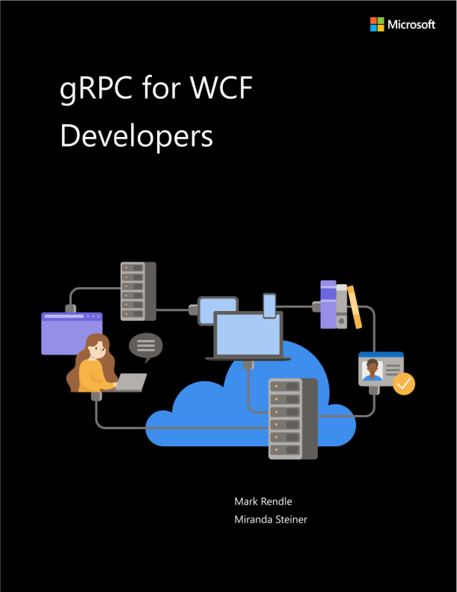
EDITION v7.0 - Updated to ASP.NET Core 7.0 Refer changelog for the book updates and community contributions. PUBLISHED BY Microsoft Developer Division, .NET, and Visual Studio product teams A division of Microsoft Corporation One Microsoft Way Redmond, Washington 98052-6399 Copyright © 2023 by Microsoft Corporation All rights reserved. No part of the contents of this book may be reproduced or transmitted in any form or by any means without the written permission of the publisher. This book is provided “as-is” and expresses the author’s views and opinions. The views, opinions and information expressed in this book, including URL and other Internet website references, may change without notice. Some examples depicted herein are provided for illustration only and are fictitious. No real association or connection is intended or should be inferred. Microsoft and the trademarks listed at https://www.microsoft.com on the “Trademarks” webpage are trademarks of the Microsoft group of companies. The Docker whale logo is a registered trademark of Docker, Inc. Used by permission. All other marks and logos are property of their respective owners. Authors: Mark Rendle - Chief Technical Officer - Visual Recode Miranda Steiner - Technical Author Editor: Maira Wenzel - Sr. Content Developer - Microsoft
gRPC is a modern framework for building networked services and distributed applications. Imagine the performance of Windows Communication Foundation (WCF) NetTCP bindings, combined with the cross-platform interoperability of SOAP. gRPC builds on HTTP/2 and the Protobuf message-encoding protocol to provide high performance, low-bandwidth communication between applications and services. It supports server and client code generation across most popular programming languages and platforms, including .NET, Java, Python, Node.js, Go, and C++. With the first-class support for gRPC in ASP.NET Core 7.0, alongside the existing gRPC tools and libraries for .NET Framework 4.x, it’s an excellent alternative to WCF for development teams looking to adopt .NET in their organizations.
This guide was written for developers working in .NET Framework or .NET who have previously used WCF, and who are seeking to migrate their applications to a modern RPC environment for .NET Core 3.0 and later versions. More generally, if you are upgrading, or considering upgrading, to .NET 7, and you want to use the built-in gRPC tools, this guide is also useful.
This is a short introduction to building gRPC Services in ASP.NET Core 7.0, with particular reference to WCF as an analogous platform. It explains the principles of gRPC, relating each concept to the equivalent features of WCF, and offers guidance for migrating an existing WCF application to gRPC. It’s also useful for developers who have experience with WCF and are looking to learn gRPC to build new services. You can use the sample applications as a template or reference for your own projects, and you are free to copy and reuse code from the book or its samples.
Feel free to forward this guide to your team to help ensure a common understanding of these considerations and opportunities. Having everybody working from a common set of terms and underlying principles helps ensure consistent application of architectural patterns and practices.
• gRPC website https://grpc.io
• Choosing between .NET 5 and .NET Framework for server apps https://learn.microsoft.com/dotnet/standard/choosing-core-framework-server
Introduction to gRPC for WCF developers ........................................................................... 1 History..........................................................................................................................................................................................1 Microservices.............................................................................................................................................................................2 About this guide.......................................................................................................................................................................3 Who this guide is for..............................................................................................................................................................3
gRPC overview......................................................................................................................... 4 Key principles ............................................................................................................................................................................4 How gRPC approaches RPC.................................................................................................................................................5 Interface Definition Language ............................................................................................................................................6 Network protocols...................................................................................................................................................................7
Key features of HTTP/2.....................................................................................................................................................7
Why we recommend gRPC for WCF developers.........................................................................................................8 Similarity to WCF.................................................................................................................................................................8 Benefits of gRPC..................................................................................................................................................................8 Comparison with CoreWCF.............................................................................................................................................9
Protocol buffers..................................................................................................................... 11 How Protobuf works............................................................................................................................................................ 11 Protobuf messages............................................................................................................................................................... 11
Declaring a message....................................................................................................................................................... 11 Field numbers.................................................................................................................................................................... 12 Types..................................................................................................................................................................................... 13 The generated code........................................................................................................................................................ 13
Protobuf scalar data types ................................................................................................................................................ 13 Other .NET primitive types ........................................................................................................................................... 14 Decimals............................................................................................................................................................................... 16
Protobuf nested types ........................................................................................................................................................ 17 Repeated fields for lists and arrays................................................................................................................................ 18 Protobuf reserved fields..................................................................................................................................................... 18
Protobuf Any and Oneof fields for variant types ..................................................................................................... 19 Any......................................................................................................................................................................................... 19 Oneof .................................................................................................................................................................................... 20
Protobuf enumerations ...................................................................................................................................................... 21 Protobuf maps for dictionaries........................................................................................................................................ 22
Using MapField properties in code........................................................................................................................... 22 Further reading ................................................................................................................................................................. 23
Comparing WCF to gRPC...................................................................................................... 24 gRPC example ........................................................................................................................................................................ 24 WCF endpoints and gRPC methods.............................................................................................................................. 25
OperationContract properties..................................................................................................................................... 25
WCF bindings and transports .......................................................................................................................................... 26 NetTCP.................................................................................................................................................................................. 26 HTTP ...................................................................................................................................................................................... 27 Named pipes...................................................................................................................................................................... 27 MSMQ................................................................................................................................................................................... 27 WebHttpBinding............................................................................................................................................................... 27
Types of RPC........................................................................................................................................................................... 27 Request/reply..................................................................................................................................................................... 28 WCF duplex, one way to client ................................................................................................................................... 28 WCF one-way operations and gRPC client streaming ...................................................................................... 30 WCF full-duplex services ............................................................................................................................................... 31
Metadata.................................................................................................................................................................................. 32 Error handling......................................................................................................................................................................... 33
Raise errors in ASP.NET Core gRPC .......................................................................................................................... 34 Catch errors in gRPC clients......................................................................................................................................... 34 gRPC richer error model................................................................................................................................................ 35
WS-* protocols....................................................................................................................................................................... 35 Metadata exchange: WS-Policy, WS-Discovery, and so on............................................................................. 35 Security: WS-Security, WS-Federation, XML Encryption, and so on............................................................ 35 WS-ReliableMessaging .................................................................................................................................................. 36 WS-Transaction, WS-Coordination........................................................................................................................... 36
Create a new ASP.NET Core gRPC project.................................................................................................................. 37 Create the project by using Visual Studio.............................................................................................................. 37 Create the project by using the .NET CLI................................................................................................................ 40 Clean up the example code ......................................................................................................................................... 41
Migrate a WCF request-reply service to a gRPC unary RPC................................................................................ 42 The WCF solution............................................................................................................................................................. 42 The portfolios.proto file................................................................................................................................................. 44 Convert the DataContract classes to gRPC messages....................................................................................... 44 Convert ServiceContract to a gRPC service ........................................................................................................... 45 Migrate the PortfolioData library to .NET............................................................................................................... 46 Use ASP.NET Core dependency injection............................................................................................................... 47 Implement the gRPC service........................................................................................................................................ 48 Generate client code....................................................................................................................................................... 50
Migrate WCF duplex services to gRPC......................................................................................................................... 53 Server streaming RPC..................................................................................................................................................... 53 Bidirectional streaming.................................................................................................................................................. 58
gRPC streaming services vs. repeated fields.............................................................................................................. 63 When to use repeated fields........................................................................................................................................ 63 When to use stream methods..................................................................................................................................... 64
Create gRPC client libraries............................................................................................................................................... 64 Useful extensions ............................................................................................................................................................. 65 Summary.............................................................................................................................................................................. 67
Security in gRPC applications .............................................................................................. 68 WCF authentication and authorization ........................................................................................................................ 68 gRPC authentication and authorization....................................................................................................................... 68 Call credentials....................................................................................................................................................................... 69
WS-Federation .................................................................................................................................................................. 69 JWT Bearer tokens ........................................................................................................................................................... 69 Add authentication and authorization to the server.......................................................................................... 70 Provide call credentials in the client application ................................................................................................. 71
Channel credentials.............................................................................................................................................................. 72
Add certificate authentication to the server.......................................................................................................... 72 Provide channel credentials in the client application........................................................................................ 73 Combine ChannelCredentials and CallCredentials ............................................................................................. 74
Self-hosted gRPC applications ........................................................................................................................................ 77 Run your app as a Windows service......................................................................................................................... 77 Run your app as a Linux service with systemd..................................................................................................... 78 HTTPS certificates for self-hosted applications.................................................................................................... 80
Create Docker images......................................................................................................................................................... 81 Microsoft base images for ASP.NET Core applications..................................................................................... 81 Create a Docker image .................................................................................................................................................. 82 Build the image................................................................................................................................................................. 84 Run the image in a container on your machine .................................................................................................. 84 Push the image to a registry........................................................................................................................................ 84
Kubernetes............................................................................................................................................................................... 85 Kubernetes terminology................................................................................................................................................ 85 Get started with Kubernetes........................................................................................................................................ 86 Run services on Kubernetes......................................................................................................................................... 87
Service meshes....................................................................................................................................................................... 93 Service mesh options...................................................................................................................................................... 94 Example: Add Linkerd to a deployment.................................................................................................................. 94
Load balancing gRPC .......................................................................................................................................................... 97 L4 load balancers ............................................................................................................................................................. 97 L7 load balancers ............................................................................................................................................................. 97 Load balancing within Kubernetes............................................................................................................................ 98
Application Performance Management....................................................................................................................... 98 The difference between logging and metrics....................................................................................................... 98 Logging in ASP.NET Core gRPC ................................................................................................................................. 98 Metrics in ASP.NET Core gRPC ................................................................................................................................... 99 Distributed tracing.........................................................................................................................................................101
CHAPTER |
|---|
1
Introduction to gRPC for WCF developers
Helping machines communicate with each other has been one of the primary preoccupations of the digital age. In particular, there’s an ongoing effort to determine the optimal remote communication mechanism that will suit the interoperability demands of the current infrastructure. As you can imagine, that mechanism changes as either the demands or the infrastructure evolves.
The release of .NET Core 3.0 marks a shift in the way that Microsoft delivers remote communication solutions to developers who want to deliver services across a range of platforms. .NET Core and later doesn’t offer Windows Communication Foundation (WCF) out of the box but, with the release of ASP.NET Core 3.0, it does provide built-in gRPC functionality.
gRPC is a popular framework in the wider software community. It’s used by developers across many programming languages for modern RPC scenarios. The community and the ecosystem are vibrant and active. Support for the gRPC protocol is being added to infrastructure components like Kubernetes, service meshes, load balancers, and more. These factors, together with its performance, efficiency, and cross-platform compatibility, make gRPC a natural choice for new apps and WCF apps moving to .NET.
The fundamental principle of a computer network as nothing more than a group of computers exchanging data with each other to achieve a set of interrelated tasks hasn’t changed since its inception. But the complexity, scale, and expectations have grown exponentially.
During the 1990s, the emphasis was mainly on improving internal networks that used the same language and platforms. TCP/IP became the gold standard for this type of communication.
The focus soon shifted to how best to optimize communication across multiple platforms by promoting a language-agnostic approach. Service-oriented architecture (SOA) provided a structure for loosely coupling a broad collection of services that could be provided to an application.
The development of web services occurred when all major platforms could access the internet, but they still couldn’t interact with each other. Web services have open standards and protocols, including:
• XML to tag and code data.
• Simple Object Access Protocol (SOAP) to transfer data.
• Web Services Definition Language (WSDL) to describe and connect web services to client applications.
• Universal Description, Discovery, and Integration (UDDI) to make web services discoverable by other services.
SOAP defines the rules by which distributed elements of an application can communicate with each other, even if they’re on different platforms. SOAP is based on XML, so it’s human-readable. The sacrifice for making SOAP easily understood is size; SOAP messages are larger than messages in comparable protocols. SOAP was designed to break monolithic applications into multicomponent form without losing security or control. So WCF was designed to work with that kind of system, unlike gRPC, which began as a distributed system. WCF addressed some of these limitations by developing and documenting proprietary extension protocols for the SOAP stack, but at the cost of a lack of support from other platforms.
Windows Communication Foundation is a framework for building services. It was designed in the early 2000s to help developers using early SOA to manage the complexities of working with SOAP. Although it removes the requirement for the developers to write their own SOAP protocols, WCF still uses SOAP to enable interoperability with other systems. WCF was also designed to deliver solutions across multiple protocols (HTTP/1.1, Net.TCP, and so on).
In microservice architectures, large applications are built as a collection of smaller modular services. Each component does a specific task or process, and components are designed to work interoperably but can be isolated as necessary.
Advantages to microservices include:
• Changes and upgrades can be handled independently.
• Error handling becomes more efficient because problems can be traced to specific services that are then isolated, rebuilt, tested, and redeployed independently of the other services.
• Scalability can be confined to specific instances or services rather than the whole application.
• Development can happen across multiple teams, with less friction than occurs when many teams work on a single codebase.
The move towards increasing virtualization, cloud computing, containers, and the Internet of Things has contributed to the ongoing rise of microservices. But microservices aren’t without their challenges. The fragmented/decentralized infrastructure put more emphasis on the need for simplicity and speed when communicating between services. This in turn drew attention to the sometimes laborious and contorted nature of SOAP.
It was into this environment that gRPC was launched, 10 years after Microsoft first released WCF. Evolved directly from Google’s internal infrastructure RPC (Stubby), gRPC was never based on the same standards and protocols that had informed the parameters of many earlier RPCs. And gRPC was only ever based on HTTP/2. That’s why it could draw on the new capabilities that advanced transport protocol provided. In particular, bidirectional streaming, binary messaging, and multiplexing.
This guide covers the key features of gRPC. The early chapters take a high-level look at the main features of WCF and compare them to those of gRPC. It identifies where there are direct correlations between WCF and gRPC and also where gRPC offers an advantage. When there’s no correlation between WCF and gRPC, or when gRPC isn’t able to offer an equivalent solution to WCF, this guide will suggest workarounds or where to go for more information.
Using a set of sample WCF applications, Chapter 5 is a deep-dive look at converting the main types of WCF service (simple request-reply, one-way, and streaming) to their equivalents in gRPC.
The final section of the book looks at how to get the best from gRPC in practice. This section includes information on using additional tools, like Docker containers or Kubernetes, to take advantage of the efficiency of gRPC. It also includes a detailed look at monitoring with logging, metrics, and distributed tracing.
This guide was written for developers working in .NET Framework or .NET Core who have used WCF and who are seeking to migrate their applications to a modern RPC environment for .NET Core 3.0 and later versions. The guide might also be useful more generally for developers upgrading or considering upgrading to .NET and who want to use the built-in gRPC tools.
CHAPTER |
|---|
2
gRPC overview
After looking at the genesis of both Windows Communication Foundation (WCF) and gRPC in the last chapter, this chapter considers some of the key features of gRPC and how they compare to WCF.
ASP.NET Core 3.0 is the first release of ASP.NET that natively supports gRPC as a first-class citizen, with Microsoft teams contributing to the official .NET implementation of gRPC. It’s recommended for building distributed applications with .NET that can interoperate with all other major programming languages and frameworks.
As discussed in chapter 1, Google wanted to use the introduction of HTTP/2 to replace Stubby, its internal, general purpose RPC infrastructure. gRPC, based on Stubby, now can take advantage of standardization and would extend its applicability to mobile computing, the cloud, and the Internet of Things.
To achieve this standardization, the Cloud Native Computing Foundation (CNCF) established a set of principles that would govern gRPC. The following list shows the most relevant ones, which are primarily concerned with maximizing accessibility and usability:
• Free and open – All artifacts should be open source, with licensing that doesn’t constrain developers from adopting gRPC.
• Coverage and simplicity – gRPC should be available across every popular platform, and simple enough to build on any platform.
• Interoperability and reach – It should be possible to use gRPC on any network, regardless of bandwidth or latency, by using widely available network standards.
• General purpose and performant – The framework should be usable by as broad a range of use-cases as possible, without compromising performance.
• Streaming – The protocol should provide streaming semantics for large datasets or asynchronous messaging.
• Metadata exchange – The protocol allows non-business data, such as authentication tokens, to be handled separately from actual business data.
• Standardized status codes – The variability of error codes should be reduced to make error handling decisions clearer. Where additional, richer error handling is required, a mechanism should be provided for managing behavior within the metadata exchange.
Windows Communication Foundation (WCF) and gRPC are both implementations of the Remote Procedure Call (RPC) pattern. This pattern aims to make calls to services that run on a different machine, or in a different process, work seamlessly, like method calls in the client application. While the aims of WCF and gRPC are the same, the details of the implementation are quite different.
Features |
WCF |
gRPC |
|---|---|---|
Objective |
Separate business code from networking implementation. |
Separate business code from interface definition and networking implementation. |
Define services and messages (chapters 3-4) |
Service Contract, Operation Contract, and Data Contract. |
Uses proto file to declare services and messages. |
Language (chapters 3-5) |
Contracts written in C# or Visual Basic. |
Protocol Buffer language. |
Wire format (chapter 3) |
Configurable, including SOAP/XML, Plain XML, JSON, and .NET Binary. |
Protocol Buffer binary format (although it’s possible to use other formats). |
Interoperability (chapter 4) |
When using SOAP over HTTP. |
Official support: .NET, Java, Python, JavaScript, C/C++, Go, Rust, Ruby, Swift, Dart, PHP. Unofficial support for other languages from the community. |
Networking (chapter 4) |
Configured at run time. Switch between NetTCP, HTTP, and MSMQ. |
HTTP/2, currently over TCP only with ASP.NET Core gRPC. |
Features |
WCF |
gRPC |
|---|---|---|
Approach (chapter 4) |
Runtime generation of serialization, deserialization, and networking code in base classes. |
Build-time generation of serialization, deserialization, and networking code in base classes. |
Security (chapter 6) |
Authentication, WS-Security, message encryption. |
Credentials, ASP.NET Core security, TLS networking. |
With Windows Communication Foundation (WCF), services can expose description metadata by using the Web Service Definition Language (WSDL). WSDL is generated dynamically by using .NET reflection at run time. Developers can use this metadata to generate clients for those services, potentially in other languages if they’re using a platform-neutral binding such as SOAP over HTTP.
gRPC uses the Interface Definition Language (IDL) from Protocol Buffers. The Protocol Buffers IDL is a custom, platform-neutral language with an open specification. Developers author .proto files to describe services, along with their inputs and outputs. These .proto files can then be used to generate language- or platform-specific stubs for clients and servers, allowing multiple different platforms to communicate. By sharing .proto files, teams can generate code to use each others’ services, without needing to take a code dependency.
One of the advantages of the Protobuf IDL is that as a custom language, it enables gRPC to be completely language and platform agnostic, not favoring any technology over another.
The Protobuf IDL is also designed for humans to both read and write, whereas WSDL is intended as a machine-readable/writable format. Changing the WSDL of a WCF service typically requires changing the service, running the service, and regenerating the WSDL file from the server. By contrast, with a
.proto file, changes are simple to apply with a text editor, and automatically flow through the generated code. Visual Studio 2022 builds .proto files in the background when they are saved. With other editors, such as VS Code, the changes are applied when the project is built.
When compared with XML, and particularly SOAP, messages encoded by using Protobuf have many advantages. Protobuf messages tend to be smaller than the same data serialized as SOAP XML, and encoding, decoding, and transmitting them over a network can be faster.
The potential disadvantage of Protobuf compared to SOAP is that, because the messages aren’t readable by humans, additional tooling is required to debug message content.
TipgRPC does support server reflection for dynamically accessing services without pre-compiled stubs, although it’s intended more for general-purpose tools than application-specific clients. For more information, see GRPC Server Reflection Protocol on GitHub. |
|---|
NoteWCF’s binary format, used with the NetTCP binding, is much closer to Protobuf in terms of compactness and performance. But NetTCP is only usable between .NET clients and servers, whereas Protobuf is a cross-platform solution. |
|---|
Unlike Windows Communication Foundation (WCF), gRPC uses HTTP/2 as a base for its networking. This protocol offers significant advantages over WCF and SOAP, which operate only on HTTP/1.1. For developers wanting to use gRPC, given that there’s no alternative to HTTP/2, it would seem to be the ideal moment to explore HTTP/2 in more detail and identify additional benefits of using gRPC.
HTTP/2, released by Internet Engineering Task Force in 2015, was derived from the experimental SPDY protocol, which was already being used by Google. It was specifically designed to be more efficient, faster, and more secure than HTTP/1.1.
Key features of HTTP/2 This list shows some of the key features and advantages of HTTP/2: Binary protocol
Request/response cycles no longer need text commands. This activity simplifies and speeds up the implementation of commands. Specifically, parsing data is faster and uses less memory, network latency is reduced with obvious related improvements to speed, and there’s an overall better use of network resources.
Streams allow you to create long-lived connections between sender and receiver, over which multiple messages or frames can be sent asynchronously. Multiple streams can operate independently over a single HTTP/2 connection.
This feature is one of the most important innovations of HTTP/2. Because it allows multiple parallel requests for data, it’s now possible to download web files concurrently from a single server. Websites load faster, and the need for optimization is reduced. Head-of-line (HOL) blocking, where responses
that are ready must wait to be sent until an earlier request is completed, is also mitigated (although HOL blocking can still occur at the TCP-transport level).
Fundamentally, the combination of gRPC and HTTP/2 offers developers at least the equivalent speed and efficiency of Net.TCP bindings for WCF, and in some cases even greater speed and efficiency. But, unlike Net.TCP, gRPC over HTTP/2 isn’t constrained to .NET applications.
Before we dive deeply into the language and techniques of gRPC, it’s worth discussing why gRPC is the right solution for Windows Communication Foundation (WCF) developers who want to migrate to
.NET.
Although the implementation and approach are different for gRPC, the experience of developing and consuming services with gRPC should be intuitive for WCF developers. The underlying goal is the same: make it possible to code as though the client and server are on the same platform, without needing to worry about networking.
Both platforms share the principle of declaring and then implementing an interface, even though the process for declaring that interface is different. And as you’ll see in chapter 5, the different types of RPC calls that gRPC supports map well to the bindings available to WCF services.
Benefits of gRPC gRPC stands above other solutions for the following reasons. Performance
Using HTTP/2 rather than HTTP/1.1 removes the requirement for human-readable messages and instead uses the smaller, faster binary protocol. This is more efficient for computers to parse. HTTP/2 also supports multiplexing requests over a single connection. This support enables responses to be sent as soon as they’re ready without the need to wait in a queue. (In HTTP/1.1, this issue is known as “head-of-line (HOL) blocking.”) You need fewer resources when using gRPC, which makes it a good solution to use for mobile devices and over slower networks.
Interoperability There are gRPC tools and libraries for all major programming languages and platforms, including
.NET, Java, Python, Go, C++, Node.js, Swift, Dart, Ruby, and PHP. Thanks to the Protocol Buffers binary wire format and the efficient code generation for each platform, developers can build performant apps while still enjoying full cross-platform support.
gRPC is a comprehensive RPC solution. It works consistently across multiple languages and platforms. It also provides excellent tooling, with much of the necessary boilerplate code automatically generated. So more developer time is freed up to focus on business logic.
gRPC has full bidirectional streaming, which provides similar functionality to WCF’s full-duplex services. gRPC streaming can operate over regular internet connections, load balancers, and service meshes.
gRPC allows clients to specify a maximum time for an RPC to finish. If the specified deadline is exceeded, the server can cancel the operation independently of the client. Deadlines and cancellations can be propagated through further gRPC calls to help enforce resource usage limits. Clients can also stop operations when a deadline is exceeded, or earlier if necessary (for example, because of a user interaction).
gRPC is implicitly secure when it’s using HTTP/2 over a TLS end-to-end encrypted connection. Support for client certificate authentication (see chapter 6) further increases security and trust between client and server.
A notable alternative to gRPC for replacing WCF services when migrating to .NET is CoreWCF. Both gRPC and CoreWCF are Microsoft endorsed paths forward for WCF applications and each comes with its own benefits and drawbacks.
CoreWCF is a community-owned .NET Foundation project supported by Microsoft that implements WCF server APIs for .NET. CoreWCF is an effort to allow existing WCF services to work with minimal changes on .NET. Your Data Contracts for WCF are unchanged with CoreWCF, and it supports many of the bindings and APIs from WCF. The main differences are around the patterns for starting WCF services, and not all configuration options are available (some configuration must now be done in code).
Services and interfaces can often migrate with few changes. Because of this, a key benefit of CoreWCF is its very high compatibility with WCF. Where changes have been made, they are to adapt to the programming style of modern .NET, for example hosting now through ASP.NET Core, and APIs now use the Task based async patterns usable with await rather than the older BeginXXX / EndXXX pattern.
On the other hand, gRPC is a modern remote communication solution with a number of features, as discussed previously. Benefits of using gRPC include better interoperability across languages, its relatively simple modern API, and a broad community ecosystem.
When deciding whether to use CoreWCF or gRPC to migrate a WCF application to .NET, CoreWCF is typically a better fit if the goal is to migrate the application with minimal changes whereas gRPC may
CHAPTER |
|---|
3
Protocol buffers
gRPC services send and receive data as Protocol Buffer (Protobuf) messages, similar to data contracts in Windows Communication Foundation (WCF). Protobuf is an efficient way of serializing structured data for machines to read and write, without the overhead that human-readable formats like XML or JSON incur.
This chapter covers how Protobuf works, and how to define your own Protobuf messages.
Most .NET object serialization techniques, including WCF’s data contracts, work by using reflection to analyze the object structure at run time. By contrast, most Protobuf libraries require you to define the structure up front by using a dedicated language (Protocol Buffer Language) in a .proto file. A compiler then uses this file to generate code for any of the supported platforms. Supported platforms include
.NET, Java, C/C++, JavaScript, and many more.
The Protobuf compiler, protoc, is maintained by Google, although alternative implementations are available. The generated code is efficient and optimized for fast serialization and deserialization of data.
The Protobuf wire format is a binary encoding. It uses some clever tricks to minimize the number of bytes used to represent messages. Knowledge of the binary encoding format isn’t necessary to use Protobuf. But if you’re interested, you can learn more about it on the Protocol Buffers website.
This section covers how to declare Protocol Buffer (Protobuf) messages in .proto files. It explains the fundamental concepts of field numbers and types, and it looks at the C# code that the protoc compiler generates.
The rest of the chapter will look in more detail at how different types of data are represented in Protobuf.
In Windows Communication Foundation (WCF), a Stock class for a stock market trading application might be defined like the following example:
namespace TraderSys;
[DataContract] public class Stock {
[DataMember] public int Id { get; set; } [DataMember] public string Symbol { get; set; } [DataMember] public string DisplayName { get; set; } [DataMember] public int MarketId { get; set; }
}
To implement the equivalent class in Protobuf, you must declare it in the .proto file. The protoc compiler will then generate the .NET class as part of the build process.
syntax = "proto3"; option csharp_namespace = "TraderSys"; message Stock { int32 id = 1; string symbol = 2; string display_name = 3; int32 market_id = 4; } |
|---|
The first line declares the syntax version being used. Version 3 of the language was released in 2016. It’s the version that we recommend for gRPC services.
The option csharp_namespace line specifies the namespace to be used for the generated C# types. This option will be ignored when the .proto file is compiled for other languages. Protobuf files often contain language-specific options for several languages.
The Stock message definition specifies four fields. Each has a type, a name, and a field number.
Field numbers are an important part of Protobuf. They’re used to identify fields in the binary encoded data, which means they can’t change from version to version of your service. The advantage is that backward compatibility and forward compatibility are possible. Clients and services will ignore field numbers that they don’t know about, as long as the possibility of missing values is handled.
In the binary format, the field number is combined with a type identifier. Field numbers from 1 to 15 can be encoded with their type as a single byte. Numbers from 16 to 2,047 take 2 bytes. You can go higher if you need more than 2,047 fields on a message for any reason. The single-byte identifiers for field numbers 1 to 15 offer better performance, so you should use them for the most basic, frequently used fields.
The type declarations are using Protobuf’s native scalar data types, which are discussed in more detail in the next section. The rest of this chapter will cover Protobuf’s built-in types and show how they relate to common .NET types.
NoteProtobuf doesn’t natively support a decimal type, so double is used instead. For applications that require full decimal precision, refer to the section on decimals in the next part of this chapter. |
|---|
When you build your application, Protobuf creates classes for each of your messages, mapping its native types to C# types. The generated Stock type would have the following signature:
public class Stock { public int Id { get; set; } public string Symbol { get; set; } public string DisplayName { get; set; } public int MarketId { get; set; } } |
|---|
The actual code that’s generated is far more complicated than this. The reason is that each class contains all the code necessary to serialize and deserialize itself to the binary wire format.
Note that the Protobuf compiler applied PascalCase to the property names, although they were snake_case in the .proto file. The Protobuf style guide recommends using snake_case in your message definitions so that the code generation for other platforms produces the expected case for their conventions.
Protobuf type |
C# type |
Notes |
|---|---|---|
double |
double |
|
Float |
float |
|
int32 |
int |
1 |
int64 |
long |
1 |
uint32 |
uint |
|
uint64 |
ulong |
Protobuf type |
C# type |
Notes |
|---|---|---|
sint32 |
int |
1 |
sint64 |
long |
1 |
fixed32 |
uint |
2 |
fixed64 |
ulong |
2 |
sfixed32 |
int |
2 |
sfixed64 |
long |
2 |
bool |
bool |
|
string |
string |
3 |
bytes |
ByteString |
4 |
1. The standard encoding for int32 and int64 is inefficient when you’re working with signed values. If your field is likely to contain negative numbers, use sint32 or sint64 instead. These types map to the C# int and long types, respectively.
2. The fixed fields always use the same number of bytes no matter what the value is. This behavior makes serialization and deserialization faster for larger values.
3. Protobuf strings are UTF-8 (or 7-bit ASCII) encoded. The encoded length can’t be greater than 232.
4. The Protobuf runtime provides a ByteString type that maps easily to and from C# byte[] arrays.
Other .NET primitive types Dates and times The native scalar types don’t provide for date and time values, equivalent to C#’s DateTimeOffset, DateTime, and TimeSpan. You can specify these types by using some of Google’s “Well Known Types” extensions. These extensions provide code generation and runtime support for complex field types across the supported platforms. The following table shows the date and time types:
C# type |
Protobuf well-known type |
|---|---|
DateTimeOffset |
google.protobuf.Timestamp |
DateTime |
google.protobuf.Timestamp |
TimeSpan |
google.protobuf.Duration |
import "google/protobuf/duration.proto"; import "google/protobuf/timestamp.proto";
message Meeting {
string subject = 1; google.protobuf.Timestamp time = 2; google.protobuf.Duration duration = 3;
}
The generated properties in the C# class aren’t the .NET date and time types. The properties use the Timestamp and Duration classes in the Google.Protobuf.WellKnownTypes namespace. These classes provide methods for converting to and from DateTimeOffset, DateTime, and TimeSpan.
// Create Timestamp and Duration from .NET DateTimeOffset and TimeSpan var meeting = new Meeting { Time = Timestamp.FromDateTimeOffset(meetingTime), // also FromDateTime() Duration = Duration.FromTimeSpan(meetingLength) }; // Convert Timestamp and Duration to .NET DateTimeOffset and TimeSpan DateTimeOffset time = meeting.Time.ToDateTimeOffset(); TimeSpan? duration = meeting.Duration?.ToTimeSpan(); |
|---|
NoteThe Timestamp type works with UTC times. DateTimeOffset values always have an offset of zero, and the DateTime.Kind property is always DateTimeKind.Utc. |
|---|
Protobuf doesn’t directly support the Guid type, known as UUID on other platforms. There’s no wellknown type for it.
The best approach is to handle Guid values as a string field, by using the standard 8-4-4-4-12 hexadecimal format (for example, 45a9fda3-bd01-47a9-8460-c1cd7484b0b3). All languages and platforms can parse that format.
Don’t use a bytes field for Guid values. Problems with endianness (Wikipedia definition) can result in erratic behavior when Protobuf is interacting with other platforms, such as Java.
The Protobuf code generation for C# uses the native types, such as int for int32. So the values are always included and can’t be null.
For values that require explicit null, such as using int? in your C# code, Protobuf’s “Well Known Types” include wrappers that are compiled to nullable C# types. To use them, import wrappers.proto into your .proto file, like this:
syntax = "proto3" import "google/protobuf/wrappers.proto"; message Person {
... google.protobuf.Int32Value age = 5;
} Protobuf will use the simple T? (for example, int?) for the generated message property. The following table shows the complete list of wrapper types with their equivalent C# type:
C# type |
Well Known Type wrapper |
|---|---|
double? |
google.protobuf.DoubleValue |
float? |
google.protobuf.FloatValue |
int? |
google.protobuf.Int32Value |
long? |
google.protobuf.Int64Value |
uint? |
google.protobuf.UInt32Value |
ulong? |
google.protobuf.UInt64Value |
Protobuf doesn’t natively support the .NET decimal type, just double and float. There’s an ongoing discussion in the Protobuf project about the possibility of adding a standard Decimal type to the wellknown types, with platform support for languages and frameworks that support it. Nothing has been implemented yet.
It’s possible to create a message definition to represent the decimal type that would work for safe serialization between .NET clients and servers. But developers on other platforms would have to understand the format being used and implement their own handling for it.
A simple implementation might be similar to the nonstandard Money type that some Google APIs use, without the currency field.
package CustomTypes; // Example: 12345.6789 -> { units = 12345, nanos = 678900000 } message DecimalValue { // Whole units part of the amount int64 units = 1; // Nano units of the amount (10^-9) // Must be same sign as units sfixed32 nanos = 2; } |
|---|
The nanos field represents values from 0.999_999_999 to -0.999_999_999. For example, the decimal value 1.5m would be represented as { units = 1, nanos = 500_000_000 }. This is why the nanos field in this example uses the sfixed32 type, which encodes more efficiently than int32 for larger values. If the units field is negative, the nanos field should also be negative.
NoteThere are multiple other algorithms for encoding decimal values as byte strings, but this message is easier to understand than any of them. The values are not affected by endianness on different platforms. |
|---|
Conversion between this type and the BCL decimal type might be implemented in C# like this:
namespace CustomTypes; public partial class DecimalValue { private const decimal NanoFactor = 1_000_000_000; public DecimalValue(long units, int nanos) { Units = units; Nanos = nanos; } public static implicit operator decimal(CustomTypes.DecimalValue grpcDecimal) { return grpcDecimal.Units + grpcDecimal.Nanos / NanoFactor; } public static implicit operator CustomTypes.DecimalValue(decimal value) { var units = decimal.ToInt64(value); var nanos = decimal.ToInt32((value - units) * NanoFactor); return new CustomTypes.DecimalValue(units, nanos); } } |
|---|
Important Whenever you use custom message types like this, you must document them with comments in .proto. Other developers can then implement conversion to and from the equivalent type in their own language or framework. |
|---|
Just as C# allows you to declare classes inside other classes, Protocol Buffer (Protobuf) allows you to nest message definitions within other messages. The following example shows how to create nested message types:
message Outer { message Inner {
string text = 1; }
Inner inner = 1; }
In the generated C# code, the Inner type will be declared in a nested static Types class within the HelloRequest class:
var inner = new Outer.Types.Inner { Text = "Hello" }; |
|---|
You specify lists in Protocol Buffer (Protobuf) by using the repeated prefix keyword. The following example shows how to create a list:
message Person { // Other fields elided repeated string aliases = 8; } |
|---|
In the generated code, repeated fields are represented by read-only properties of the Google.Protobuf.Collections.RepeatedField
The RepeatedField
The backward-compatibility guarantees in Protocol Buffer (Protobuf) rely on field numbers always representing the same data item. If a field is removed from a message in a new version of the service, that field number should never be reused. You can enforce this behavior by using the reserved keyword.
If the displayName and marketId fields were removed from the Stock message defined earlier, their field numbers should be reserved as in the following example.
syntax "proto3"; message Stock { reserved 3, 4; int32 id = 1; string symbol = 2; } |
|---|
You can also use the reserved keyword as a placeholder for fields that might be added in the future. You can express contiguous field numbers as a range by using the to keyword.
syntax "proto3"; message Info {
reserved 2, 9 to 11, 15; // ...
}
Handling dynamic property types (that is, properties of type object) in Windows Communication Foundation (WCF) is complicated. For example, you must specify serializers and provide KnownType attributes.
Protocol Buffer (Protobuf) provides two simpler options for dealing with values that might be of more than one type. The Any type can represent any known Protobuf message type. And you can use the oneof keyword to specify that only one of a range of fields can be set in any message.
Any is one of Protobuf’s “well-known types”: a collection of useful, reusable message types with implementations in all supported languages. To use the Any type, you must import the google/protobuf/any.proto definition.
syntax = "proto3"; import "google/protobuf/any.proto"; message Stock { // Stock-specific data } message Currency { // Currency-specific data } message ChangeNotification { int32 id = 1; google.protobuf.Any instrument = 2; } |
|---|
In the C# code, the Any class provides methods for setting the field, extracting the message, and checking the type.
public void FormatChangeNotification(ChangeNotification change) {
if (change.Instrument.Is(Stock.Descriptor)) {
FormatStock(change.Instrument.Unpack
} else if (change.Instrument.Is(Currency.Descriptor)) {
FormatCurrency(change.Instrument.Unpack
throw new ArgumentException("Unknown instrument type");
} }
Protobuf’s internal reflection code uses the Descriptor static field on each generated type to resolve Any field types. There’s also a TryUnpack
Oneof fields are a language feature: the compiler handles the oneof keyword when it generates the message class. Using oneof to specify the ChangeNotification message might look like this:
message Stock { // Stock-specific data } message Currency { // Currency-specific data } message ChangeNotification { int32 id = 1; oneof instrument { Stock stock = 2; Currency currency = 3; } } |
|---|
Fields within the oneof set must have unique field numbers in the overall message declaration. When you use oneof, the generated C# code includes an enum that specifies which of the fields has been set. You can test the enum to find which field is set. Fields that aren’t set return null or the default value, rather than throwing an exception.
public void FormatChangeNotification(ChangeNotification change) { switch (change.InstrumentCase) { case ChangeNotification.InstrumentOneofCase.None: return; case ChangeNotification.InstrumentOneofCase.Stock: FormatStock(change.Stock); break; case ChangeNotification.InstrumentOneofCase.Currency: FormatCurrency(change.Currency); break; default:throw new ArgumentException("Unknown instrument type"); } } |
|---|
Setting any field that’s part of a oneof set will automatically clear any other fields in the set. You can’t use repeated with oneof. Instead, you can create a nested message with either the repeated field or the oneof set to work around this limitation.
Protobuf supports enumeration types. You saw this support in the previous section, where an enum was used to determine the type of a Oneof field. You can define your own enumeration types, and Protobuf will compile them to C# enum types.
Because you can use Protobuf with various languages, the naming conventions for enumerations are different from the C# conventions. However, the code generator converts the names to the traditional C# case. If the Pascal-case equivalent of the field name starts with the enumeration name, then it’s removed.
For example, in the following Protobuf enumeration, the fields are prefixed with ACCOUNT_STATUS. This prefix is equivalent to the Pascal-case enum name, AccountStatus.
enum AccountStatus { ACCOUNT_STATUS_UNKNOWN = 0; ACCOUNT_STATUS_PENDING = 1; ACCOUNT_STATUS_ACTIVE = 2; ACCOUNT_STATUS_SUSPENDED = 3; ACCOUNT_STATUS_CLOSED = 4; } |
|---|
The generator creates a C# enum equivalent to the following code:
public enum AccountStatus { Unknown = 0, Pending = 1, Active = 2, Suspended = 3, Closed = 4 } |
|---|
Protobuf enumeration definitions must have a zero constant as their first field. As in C#, you can declare multiple fields with the same value. But you must explicitly enable this option by using the allow_alias option in the enum:
enum AccountStatus { option allow_alias = true; ACCOUNT_STATUS_UNKNOWN = 0; ACCOUNT_STATUS_PENDING = 1; ACCOUNT_STATUS_ACTIVE = 2; ACCOUNT_STATUS_SUSPENDED = 3; ACCOUNT_STATUS_CLOSED = 4; } |
|---|
You can declare enumerations at the top level in a .proto file, or nested within a message definition. Nested enumerations—like nested messages—will be declared within the .Types static class in the generated message class.
There’s no way to apply the [Flags] attribute to a Protobuf-generated enum, and Protobuf doesn’t understand bitwise enum combinations. Look at the following example:
enum Region {
REGION_NONE = 0;
REGION_NORTH_AMERICA = 1; REGION_SOUTH_AMERICA = 2; REGION_EMEA = 4; REGION_APAC = 8;
} message Product {
Region available_in = 1; }
If you set product.AvailableIn to Region.NorthAmerica | Region.SouthAmerica, it’s serialized as the integer value 3. When a client or server tries to deserialize the value, it won’t find a match in the enum definition for 3. The result will be Region.None.
The best way to work with multiple enum values in Protobuf is to use a repeated field of the enum type.
It’s important to be able to represent arbitrary collections of named values in messages. In .NET, this activity is commonly handled through dictionary types. The equivalent of the .NET IDictionary
message StockPrices { map |
|---|
In the generated code, map fields are represented by read-only properties of the Google.Protobuf.Collections.MapField
Map fields can’t be directly repeated in a message definition. But you can create a nested message that contains a map and use repeated on the message type, as in the following example:
message Order { message Attributes { map } repeated Attributes attributes = 1; } |
|---|
The MapField properties generated from map fields are read-only, and will never be null. To set a map property, use the Add(IDictionary
public Order CreateOrder(Dictionary
var order = new Order(); order.Attributes.Add(attributes);
return order; }
For more information about Protobuf, see the official Protobuf documentation.
CHAPTER |
|---|
4
Comparing WCF to gRPC
The previous chapter gave you a good look at Protobuf and how gRPC handles messages. Before you work through a detailed conversion from Windows Communication Foundation (WCF) to gRPC, it’s important to know how the features available in WCF are handled in gRPC and what workarounds you can use when there’s no gRPC equivalent. In particular, this chapter will cover the following subjects:
• Operations and methods
• Bindings and transports
• RPC types
• Metadata
• Error handling
• WS-* protocols
When you create a new ASP.NET Core 7.0 gRPC project from Visual Studio 2022 or the command line, the gRPC equivalent of “Hello World” is generated for you. It consists of a greeter.proto file that defines the service and its messages, and a GreeterService.cs file with an implementation of the service.
syntax = "proto3"; option csharp_namespace = "HelloGrpc"; package Greet; // The greeting service definition. service Greeter {
// Sends a greeting rpc SayHello (HelloRequest) returns (HelloReply);
} // The request message that contains the user's name. message HelloRequest {
string name = 1;
} // The response message that contains the greetings. message HelloReply {
string message = 1; }
namespace HelloGrpc; public class GreeterService : Greeter.GreeterBase {
private readonly ILogger
_logger = logger;
} public override Task
context) {
return Task.FromResult(new HelloReply {
Message = "Hello " + request.Name });
}
} This chapter will refer to this example code when explaining different concepts and features of gRPC.
In Windows Communication Foundation (WCF), when you’re writing your application code, you use one of the following methods:
• You write the application code in a class and decorate methods with the OperationContract attribute.
• You declare an interface for the service and add OperationContract attributes to the interface.
For example, the WCF equivalent of the greet.proto Greeter service might be written as follows:
[ServiceContract] public interface IGreeterService { [OperationContract] string SayHello(string name); } |
|---|
Chapter 3 showed that Protobuf message definitions are used to generate data classes. Service and method declarations are used to generate base classes that you inherit from to implement the service. You just declare the methods to be implemented in the .proto file, and the compiler generates a base class with virtual methods that you must override.
The OperationContract attribute has properties to control or refine how it works. gRPC methods don’t offer this type of control. The following table lists those OperationContract properties and describes how the functionality that they specify is (or isn’t) dealt with in gRPC:
OperationContract property |
gRPC |
|---|---|
Action |
A URI identifies the operation. gRPC uses the name of package, service, and rpc from the .proto file. |
AsyncPattern |
All gRPC service methods return Task objects. |
IsInitiating |
See the paragraph after this table. |
IsOneWay |
One-way gRPC methods return Empty results or use client streaming. |
IsTerminating |
See the paragraph after this table. |
Name |
This property is SOAP related and has no meaning in gRPC. |
ProtectionLevel |
There’s no message encryption. Network encryption is handled at the transport layer (TLS over HTTP/2). |
ReplyAction |
This property is SOAP related and has no meaning in gRPC. |
For more information on gRPC security and encryption, see chapter 6.
Windows Communication Foundation (WCF) has built-in bindings that specify different network protocols, wire formats, and other implementation details. gRPC effectively has just one network protocol and one wire format. (Technically you can customize the wire format, but that’s beyond the scope of this book.) You’re likely to discover that gRPC offers the best solution in most cases.
What follows is a short discussion about the most relevant WCF bindings and how they compare to their equivalents in gRPC.
WCF’s NetTCP binding allows for persistent connections, small messages, and two-way messaging. But it works only between .NET clients and servers. gRPC allows the same functionality but is supported across multiple programming languages and platforms.
gRPC has many features of WCF’s NetTCP binding, but they’re not always implemented in the same way. For example, in WCF, encryption is controlled through configuration and handled in the framework. In gRPC, encryption is achieved at the connection level through HTTP/2 over TLS.
The WCF binding called BasicHttpBinding is usually text-based and uses SOAP as the wire format. It’s slow compared to the NetTCP binding. It’s used to provide cross-platform interoperability, or connection over internet infrastructure.
The equivalent in gRPC uses HTTP/2 as the underlying transport layer with the binary Protobuf wire format for messages. So it can offer performance at the NetTCP service level and full cross-platform interoperability with all modern programming languages and frameworks.
WCF provided a named pipes binding for communication between processes on the same physical machine. ASP.NET Core gRPC doesn’t support named pipes. For inter-process communication (IPC) using gRPC instead supports Unix domain sockets. Unix domain sockets are supported on Linux and modern versions of Windows.
For more information, see Inter-process communication with gRPC.
MSMQ is a proprietary Windows message queue. WCF’s binding to MSMQ enables “fire and forget” requests from clients that might be processed at any time in the future. gRPC doesn’t natively provide any message queue functionality.
The best alternative is to directly use a messaging system like Azure Service Bus, RabbitMQ, or Kafka. You can implement this functionality with the client placing messages directly onto the queue, or a gRPC client streaming service that enqueues the messages.
WebHttpBinding (also known as WCF REST), with the WebGet and WebInvoke attributes, enabled you to develop RESTful APIs that could speak JSON at a time when this behavior was less common. If you have a RESTful API built with WCF REST, consider migrating it to a regular ASP.NET Core MVC Web API application. This migration would provide the same functionality as a conversion to gRPC.
As a Windows Communication Foundation (WCF) developer, you’re probably used to dealing with the following types of remote procedure call (RPC):
• Request/reply
• Duplex:
– One-way duplex with session
– Full duplex with session
• One-way
WCF |
gRPC |
|---|---|
Regular request/reply |
Unary |
Duplex service with session using a client callback interface |
Server streaming |
Full duplex service with session |
Bidirectional streaming |
One-way operations |
Client streaming |
For simple request/reply methods that take and return small amounts of data, use the simplest gRPC pattern, the unary RPC.
service Things { rpc Get(GetThingRequest) returns (GetThingResponse); } public class ThingService : Things.ThingsBase { public override async Task { // Get thing from database return new GetThingResponse { Thing = thing }; } } public async Task ShowThing(int thingId) { var thing = await _thingsClient.GetAsync(new GetThingRequest { ThingId = thingId }); Console.WriteLine($"{thing.Name}"); } |
|---|
As you can see, implementing a gRPC unary RPC service method is similar to implementing a WCF operation. The difference is that with gRPC, you override a base class method instead of implementing an interface. On the server, gRPC base methods always return Task, although the client provides both async and blocking methods to call the service.
WCF applications (with certain bindings) can create a persistent connection between client and server. The server can asynchronously send data to the client until the connection is closed, by using a callback interface specified in the ServiceContractAttribute.CallbackContract property.
gRPC services provide similar functionality with message streams. Streams don’t map exactly to WCF duplex services in terms of implementation, but you can achieve the same results.
gRPC supports the creation of persistent streams from client to server, and from server to client. Both types of stream can be active concurrently. This ability is called bidirectional streaming.
You can use streams for arbitrary, asynchronous messaging over time. Or you can use them for passing large datasets that are too big to generate and send in a single request or response.
The following example shows a server-streaming RPC.
service ClockStreamer { rpc Subscribe(ClockSubscribeRequest) returns (stream ClockMessage); } public class ClockStreamerService : ClockStreamer.ClockStreamerBase { public override async Task Subscribe(ClockSubscribeRequest request, IServerStreamWriter { while (!context.CancellationToken.IsCancellationRequested) { var time = DateTimeOffset.UtcNow; await responseStream.WriteAsync(new ClockMessage { message = $"The time is {time:t}." }); await Task.Delay(TimeSpan.FromSeconds(10), context.CancellationToken); } } } |
|---|
This server stream can be consumed from a client application, as shown in the following code:
public async Task TellTheTimeAsync(CancellationToken token) { var channel = GrpcChannel.ForAddress("https://localhost:5001"); var client = new ClockStreamer.ClockStreamerClient(channel); var request = new ClockSubscribeRequest(); var response = client.Subscribe(request); await foreach (var update in response.ResponseStream.ReadAllAsync(token)) { Console.WriteLine(update.Message); } } |
|---|
NoteServer-streaming RPCs are useful for subscription-style services. They’re also useful for sending large datasets when it would be inefficient or impossible to build the entire dataset in memory. However, streaming responses isn’t as fast as sending repeated fields in a single message. As a rule, streaming shouldn’t be used for small datasets. |
|---|
A WCF duplex service uses a client callback interface that can have multiple methods. A gRPC serverstreaming service can only send messages over a single stream. If you need multiple methods, use a message type with either an Any field or a oneof field to send different messages, and write code in the client to handle them.
In WCF, the ServiceContract class with the session is kept alive until the connection is closed. Multiple methods can be called within the session. In gRPC, the Task that the implementation method returns shouldn’t finish until the connection is closed.
WCF provides one-way operations (marked with [OperationContract(IsOneWay = true)]) that return a transport-specific acknowledgment. gRPC service methods always return a response, even if it’s empty. The client should always await that response. For the “fire-and-forget” style of messaging in gRPC, you can create a client streaming service.
thing_log.proto
service ThingLog { rpc OpenConnection(stream Thing) returns (ConnectionClosedResponse); } |
|---|
ThingLogService.cs
public class ThingLogService : Protos.ThingLog.ThingLogBase { private static readonly ConnectionClosedResponse EmptyResponse = new ConnectionClosedResponse(); private readonly ILogger _logger = logger; } public override async Task requestStream, ServerCallContext context) { while (await requestStream.MoveNext(context.CancellationToken)) { _logger.LogInformation(requestStream.Current.Description); } return EmptyResponse; } } |
|---|
ThingLog client example public class ThingLogger : IAsyncDisposable {
private readonly ThingLog.ThingLogClient _client; private readonly AsyncClientStreamingCall
public ThingLogger(ThingLog.ThingLogClient client)
{
_client = client; _stream = client.OpenConnection();
} public async Task WriteAsync(string description) {
await _stream.RequestStream.WriteAsync(new Thing {
Description = description, Time = Timestamp.FromDateTimeOffset(DateTimeOffset.UtcNow)
});
} public async ValueTask DisposeAsync() {
await _stream.RequestStream.CompleteAsync(); _stream.Dispose();
} }
You can use client-streaming RPCs for fire-and-forget messaging, as shown in the previous example. You can also use them for sending very large datasets to the server. The same warning about performance applies: for smaller datasets, use repeated fields in regular messages.
WCF duplex binding supports multiple one-way operations on both the service interface and the client callback interface. This support allows ongoing conversations between client and server. gRPC supports something similar with bidirectional streaming RPCs, where both parameters are marked with the stream modifier.
service Chatter { rpc Connect(stream IncomingMessage) returns (stream OutgoingMessage); } |
|---|
ChatterService.cs public class ChatterService : Chatter.ChatterBase {
private readonly IChatHub _hub; public ChatterService(IChatHub hub) {
_hub = hub;
} public override async Task Connect(IAsyncStreamReader
IServerStreamWriter
_hub.MessageReceived += async (sender, args) => await responseStream.WriteAsync(new MessageResponse {Text = args.Message});
while (await requestStream.MoveNext(context.CancellationToken)) {
await _hub.SendAsync(requestStream.Current.Text); }
} }
In the previous example, you can see that the implementation method receives both a request stream (IAsyncStreamReader
Chatter client
public class Chat : IAsyncDisposable { private readonly Chatter.ChatterClient _client; private readonly AsyncDuplexStreamingCall public Chat(Chatter.ChatterClient client) { _client = client; _stream = _client.Connect(); _cancellationTokenSource = new CancellationTokenSource(); _readTask = ReadAsync(_cancellationTokenSource.Token); } public async Task SendAsync(string message) { await _stream.RequestStream.WriteAsync(new MessageRequest {Text = message}); } private async Task ReadAsync(CancellationToken token) { while (await _stream.ResponseStream.MoveNext(token)) { Console.WriteLine(_stream.ResponseStream.Current.Text); } } public async ValueTask DisposeAsync() { await _stream.RequestStream.CompleteAsync(); await _readTask; _stream.Dispose(); } } |
|---|
Metadata refers to additional data that might be useful during the processing of requests and responses but that’s not part of the actual application data. Metadata might include authentication tokens, request identifiers and tags for monitoring purposes, and information about the data, like the number of records in a dataset.
It’s possible to add generic key/value headers to Windows Communication Foundation (WCF) messages by using an OperationContextScope and the OperationContext.OutgoingMessageHeaders property and handle them by using MessageProperties.
gRPC calls and responses can also include metadata that’s similar to HTTP headers. This metadata is mostly invisible to gRPC itself and is passed through to be processed by your application code or middleware. Metadata is represented as key/value pairs, where the key is a string and the value is either a string or binary data. You don’t need to specify metadata in the .proto file.
Metadata is handled by the Metadata class of the Grpc.Core.Api NuGet package. This class can be used with collection initializer syntax.
This example shows how to add metadata to a call from a C# client:
var metadata = new Metadata { { "Requester", _clientName } }; var request = new GetPortfolioRequest { Id = portfolioId }; var response = await client.GetPortfolioAsync(request, metadata); |
|---|
gRPC services can access metadata from the ServerCallContext argument’s RequestHeaders property:
public async Task var requesterHeader = context.RequestHeaders.FirstOrDefault(e => e.Key == "Requester"); if (requesterHeader != null) { _logger.LogInformation($"Request from {requesterHeader.Value}"); } // ... } |
|---|
Services can send metadata to clients by using the ResponseTrailers property of ServerCallContext:
public async Task // ... context.ResponseTrailers.Add("Responder", _serverName); // ... } |
|---|
Windows Communication Foundation (WCF) uses FaultException and FaultContract to provide detailed error information, including supporting the SOAP Fault standard.
Status code |
Problem |
|---|---|
GRPC_STATUS_UNIMPLEMENTED |
Method hasn’t been written. |
GRPC_STATUS_UNAVAILABLE |
Problem with the whole service. |
GRPC_STATUS_UNKNOWN |
Invalid response. |
GRPC_STATUS_INTERNAL |
Problem with encoding/decoding. |
GRPC_STATUS_UNAUTHENTICATED |
Authentication failed. |
GRPC_STATUS_PERMISSION_DENIED |
Authorization failed. |
GRPC_STATUS_CANCELLED |
Call was canceled, usually by the caller. |
An ASP.NET Core gRPC service can send an error response by throwing an RpcException, which can be caught by the client as if it were in the same process. The RpcException must include a status code and description, and can optionally include metadata and a longer exception message. The metadata can be used to send supporting data, similar to how FaultContract objects can carry additional data for WCF errors.
public async Task var user = context.GetHttpContext().User; if (!ValidateUser(user)) { var metadata = new Metadata { { "User", user.Identity.Name } }; throw new RpcException(new Status(StatusCode.PermissionDenied, "Permission denied"), metadata); } } |
|---|
Just like WCF clients can catch FaultException errors, a gRPC client can catch an RpcException to handle errors. Because RpcException isn’t a generic type, you can’t catch different error types in different blocks. But you can use C#’s exception filters feature to declare separate catch blocks for different status codes, as shown in the following example:
var portfolio = await client.GetPortfolioAsync(new GetPortfolioRequest { Id = id });
} catch (RpcException ex) when (ex.StatusCode == StatusCode.PermissionDenied)
{
var userEntry = ex.Trailers.FirstOrDefault(e => e.Key == "User"); Console.WriteLine($"User '{userEntry.Value}' does not have permission to view this
portfolio."); } catch (RpcException) {
// Handle any other error type ... }
ImportantWhen you provide additional metadata for errors, be sure to document the relevant keys and values in your API documentation, or in comments in your .proto file. |
|---|
Google has developed a richer error model that’s more like WCF’s FaultContract, but this model isn’t supported in C# yet. Currently, it’s only available for Go, Java, Python, and C++.
One of the real benefits of working with Windows Communication Foundation (WCF) was that it supported many of the existing WS-* standard protocols. This section will briefly cover how gRPC manages the same WS-* protocols and discuss what options are available when there’s no alternative.
SOAP services expose Web Services Description Language (WSDL) schema documents with information such as data formats, operations, or communication options. You can use this schema to generate the client code.
gRPC works best when servers and clients are generated from the same .proto files, but a Server Reflection optional extension does provide a way to expose dynamic information from a running server. For more information, see the Grpc.Reflection NuGet package.
The WS-Discovery protocol is used to locate services on a local network. gRPC services are located through DNS or a service registry such as Consul or ZooKeeper.
Security, authentication, and authorization are covered in much more detail in chapter 6. But it’s worth noting here that, unlike WCF, gRPC doesn’t support WS-Security, WS-Federation, or XML Encryption. Even so, gRPC provides excellent security. All gRPC network traffic is automatically encrypted when it’s using HTTP/2 over TLS. You can use X509 certificates for mutual client/server authentication.
gRPC does not provide an equivalent to WS-ReliableMessaging. Retry semantics should be handled in code, possibly with a library like Polly. When you’re running in Kubernetes or similar orchestration environments, service meshes can also help to provide reliable messaging between services.
WCF’s implementation of distributed transactions uses Microsoft Distributed Transaction Coordinator (MSDTC). It works with resource managers that specifically support it, like SQL Server, MSMQ, or Windows file systems. There’s no equivalent yet in the modern microservices world, in part due to the wider range of technologies in use. For a discussion of transactions, see Appendix A.
CHAPTER |
|---|
5
Migrate a WCF solution to gRPC
This chapter will describe how to work with ASP.NET Core 7.0 gRPC projects and demonstrate migrating different types of Windows Communication Foundation (WCF) services to the gRPC equivalent:
• Create an ASP.NET Core 7.0 gRPC project.
• Simple request-reply operations to gRPC unary RPC.
• One-way operations to gRPC client streaming RPC.
• Full-duplex services to gRPC bidirectional streaming RPC.
There’s also a comparison of using streaming services versus repeated fields for returning datasets, and there’s a discussion of the use of client libraries at the end of the chapter.
The sample WCF application is a minimal stub of a set of stock trading services. It uses the opensource Inversion of Control (IoC) container library called Autofac for dependency injection. It includes three services, one for each WCF service type. The services will be discussed in more detail in the following sections. You can download the solutions from dotnet-architecture/grpc-for-wcf-developers on GitHub. The services use fake data to minimize external dependencies. The samples include the WCF and gRPC implementations of each service.
The .NET SDK comes with a powerful CLI tool, dotnet, which enables you to create and manage projects and solutions from the command line. The SDK is closely integrated with Visual Studio, so everything is also available through the familiar graphical user interface. This chapter shows both ways to create a new ASP.NET Core gRPC project.
Important To develop any ASP.NET Core 7.0 app, you need Visual Studio 2022, with the ASP.NET and web development workload installed. |
|---|
Create an empty solution called TraderSys from the Blank Solution template. Add a solution folder called src. Then, right-click on the folder and choose Add > New Project. Enter grpc in the template search box, and you should see a project template called gRPC Service.
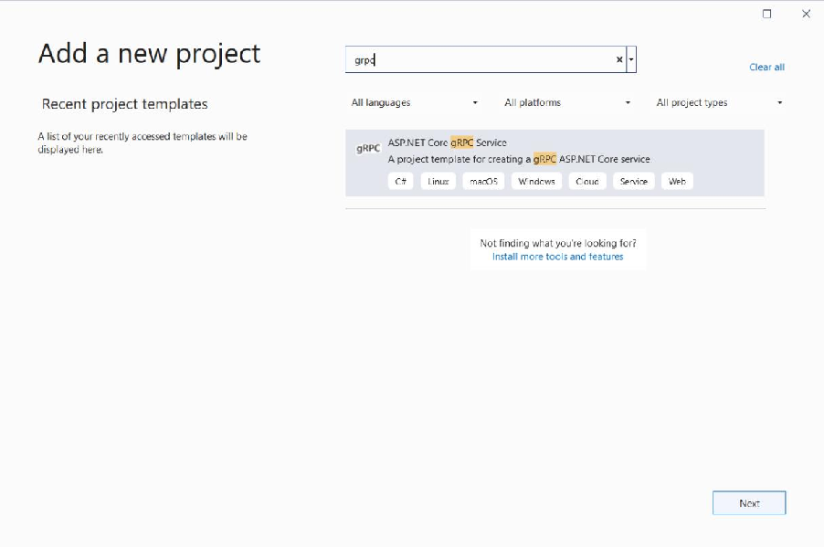
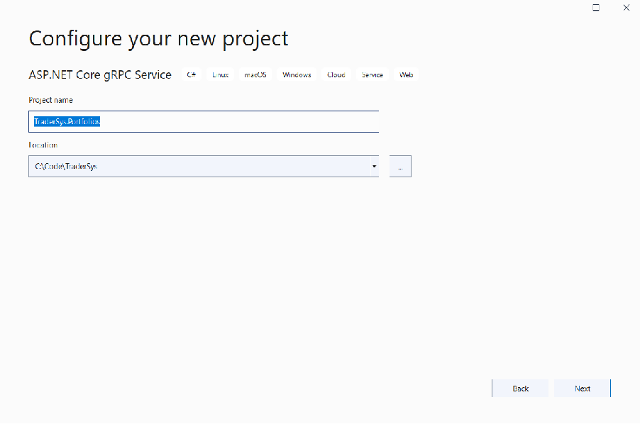
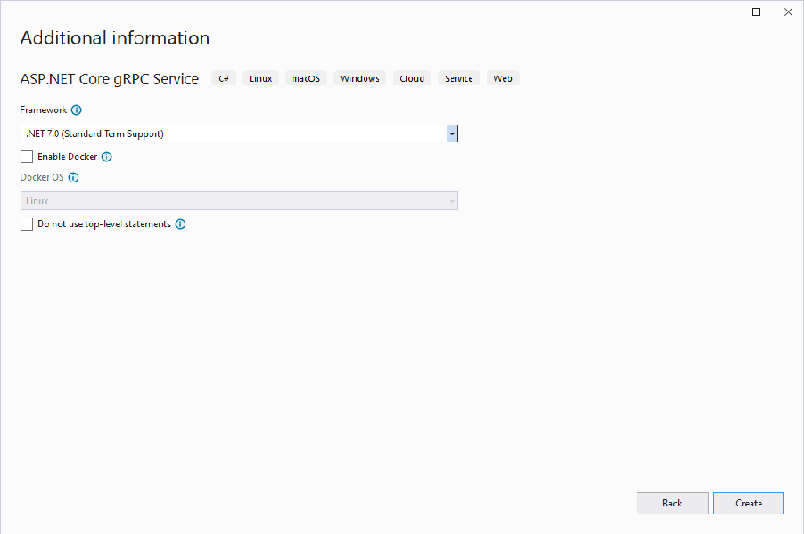
At present, you have limited options for the service creation. Docker will be introduced later, so for now, leave that option unselected. Just select Create. Your first ASP.NET Core 7.0 gRPC project is generated and added to the solution. If you don’t want to know about working with the dotnet CLI, skip to the Clean up the example code section.
This section covers the creation of solutions and projects from the command line.
Create the solution as shown in the following command. The -o (or --output) flag specifies the output directory, which is created in the current directory if it doesn’t already exist. The solution has the same name as the directory: TraderSys.sln. You can provide a different name by using the -n (or --name) flag.
dotnet new sln -o TraderSys cd TraderSys |
|---|
ASP.NET Core 7.0 comes with a CLI template for gRPC services. Create the new project by using this template, putting it into an src subdirectory as is conventional for ASP.NET Core projects. The project is named after the directory (TraderSys.Portfolios.csproj), unless you specify a different name with the -n flag.
dotnet new grpc -o src/TraderSys.Portfolios |
|---|
Finally, add the project to the solution by using the dotnet sln command:
dotnet sln add src/TraderSys.Portfolios |
|---|
TipBecause the particular directory only contains a single .csproj file, you can specify just the directory, to save typing. |
|---|
You can now open this solution in Visual Studio 2022, Visual Studio Code, or whatever editor you prefer.
You’ve now created an example service by using the gRPC template, which was reviewed earlier in the book. This code isn’t useful in our stock trading context, so we’ll edit things for our first project.
Go ahead and rename the Protos/greet.proto file to Protos/portfolios.proto, and open it in your editor. Delete everything after the package line. Then change the option csharp_namespace, package and service names, and remove the default SayHello service. The code now looks like the following:
syntax = "proto3"; option csharp_namespace = "TraderSys.Portfolios.Protos"; package PortfolioServer; service Portfolios { // RPCs will go here } |
|---|
TipThe template doesn’t add the Protos namespace part by default, but adding it makes it easier to keep gRPC-generated classes and your own classes clearly separated in your code. |
|---|
If you rename the greet.proto file in an integrated development environment (IDE) like Visual Studio, a reference to this file is automatically updated in the .csproj file. But in some other editor, such as Visual Studio Code, this reference isn’t updated automatically, so you need to edit the project file manually.
In the gRPC build targets, there’s a Protobuf item element that lets you specify which .proto files should be compiled, and which form of code generation is required (that is, “Server” or “Client”).
The GreeterService class is in the Services folder and inherits from Greeter.GreeterBase. Rename it to PortfolioService, and change the base class to Portfolios.PortfoliosBase. Delete the override methods.
public class PortfolioService : Protos.Portfolios.PortfoliosBase { } |
|---|
There was a reference to the GreeterService class in the Program.cs. If you used refactoring to rename the class, this reference should have been updated automatically. However, if you didn’t, you need to edit it manually.
using TraderSys.Portfolios.Services; var builder = WebApplication.CreateBuilder(args); // Add services to the container. builder.Services.AddGrpc(); var app = builder.Build(); // Configure the HTTP request pipeline. app.MapGrpcService client. To learn how to create a client, visit: https://go.microsoft.com/fwlink/?linkid=2086909"); app.Run(); |
|---|
In the next section, we’ll add functionality to this new service.
This section covers how to migrate a basic request-reply service in WCF to a unary RPC service in ASP.NET Core gRPC. These services are the simplest service types in both Windows Communication Foundation (WCF) and gRPC, so it’s an excellent place to start. After migrating the service, you’ll learn how to generate a client library from the same .proto file to consume the service from a .NET client application.
The PortfoliosSample solution includes a simple request-reply Portfolio service to download either a single portfolio or all portfolios for a given trader. The service is defined in the interface IPortfolioService with a ServiceContract attribute:
[ServiceContract] public interface IPortfolioService { [OperationContract] Task [OperationContract] Task } |
|---|
The Portfolio model is a simple C# class marked with DataContract and including a list of PortfolioItem objects. These models are defined in the TraderSys.PortfolioData project along with a repository class that represents a data access abstraction.
[DataContract] public class Portfolio { [DataMember] public int Id { get; set; } [DataMember] public Guid TraderId { get; set; } [DataMember] public List } [DataContract] public class PortfolioItem { [DataMember] public int Id { get; set; } [DataMember] public int ShareId { get; set; } [DataMember] public int Holding { get; set; } [DataMember] public decimal Cost { get; set; } } |
|---|
The ServiceContract implementation uses a repository class provided via dependency injection that returns instances of the DataContract types:
public class PortfolioService : Protos.Portfolios.PortfoliosBase { private readonly IPortfolioRepository _repository; public PortfolioService(IPortfolioRepository repository) { _repository = repository; } public async Task return await _repository.GetAsync(traderId, portfolioId); } public async Task return await _repository.GetAllAsync(traderId); } } |
|---|
If you followed the instructions in the previous section, you should have a gRPC project with a portfolios.proto file that looks like this:
syntax = "proto3"; option csharp_namespace = "TraderSys.Portfolios.Protos"; package PortfolioServer; service Portfolios { // RPCs will go here } |
|---|
The first step is to migrate the DataContract classes to their Protobuf equivalents.
The PortfolioItem class will be converted to a Protobuf message first, because the Portfolio class depends on it. The class is simple, and three of the properties map directly to gRPC data types. The Cost property, which represents the price paid for the shares at purchase, is a decimal field. gRPC supports only float or double for real numbers, which aren’t suitable for currency. Because share prices vary by a minimum of one cent, the cost can be expressed as an int32 of cents.
NoteRemember to use snake_case for field names in your .proto file. The C# code generator will convert them to PascalCase for you, and users of other languages will thank you for respecting their different coding standards. |
|---|
message PortfolioItem { int32 id = 1; int32 share_id = 2; int32 holding = 3; int32 cost_cents = 4; } |
|---|
The Portfolio class is a little more complicated. In the WCF code, the developer used a Guid for the TraderId property, and contains a List
message Portfolio { int32 id = 1; string trader_id = 2; repeated PortfolioItem items = 3; } |
|---|
Now that you have the data messages, you can declare the service RPC endpoints.
The WCF Get method takes two parameters: Guid traderId and int portfolioId. gRPC service methods can take only a single parameter, so you need to create a message to hold the two values. It’s common practice to name these request objects with the same name as the method followed by the suffix Request. Again, string is being used for the traderId field instead of Guid.
The service could just return a Portfolio message directly, but again, this could affect backward compatibility in the future. It’s a good practice to define separate Request and Response messages for every method in a service, even if many of them are the same right now. So declare a GetResponse message with a single Portfolio field.
This example shows the declaration of the gRPC service method with the GetRequest message:
message GetRequest { string trader_id = 1; int32 portfolio_id = 2; } message GetResponse { Portfolio portfolio = 1; } service Portfolios { rpc Get(GetRequest) returns (GetResponse); } |
|---|
The WCF GetAll method takes only a single parameter, traderId, so it might seem that you could specify string as the parameter type. But gRPC requires a defined message type. This requirement helps to enforce the practice of using custom messages for all inputs and outputs, for future backward compatibility.
The WCF method also returns a List
WarningYou might be tempted to create a PortfolioList message or something similar and use it across multiple service methods, but you should resist this temptation. It’s impossible to know how the various methods on a service will evolve, so keep their messages specific and cleanly separated. |
|---|
message GetAllRequest {
string trader_id = 1;
} message GetAllResponse {
repeated Portfolio portfolios = 1;
} service Portfolios {
rpc Get(GetRequest) returns (GetResponse);
rpc GetAll(GetAllRequest) returns (GetAllResponse); }
If you save your project with these changes, the gRPC build target will run in the background and generate all the Protobuf message types and a base class that you can inherit to implement the service.
Open the Services/GreeterService.cs class and delete the example code. Now you can add the Portfolio service implementation. The generated base class will be in the Protos namespace and is generated as a nested class. gRPC creates a static class with the same name as the service in the
.proto file and a base class with the suffix Base inside that static class, so the full identifier for the base type is TraderSys.Portfolios.Protos.Portfolios.PortfoliosBase.
namespace TraderSys.Portfolios.Services; public class PortfolioService : Protos.Portfolios.PortfoliosBase { } |
|---|
The base class declares virtual methods for Get and GetAll that can be overridden to implement the service. The methods are virtual rather than abstract so that if you don’t implement them, the service can return an explicit gRPC Unimplemented status code, much like you might throw a NotImplementedException in regular C# code.
The signature for all gRPC unary service methods in ASP.NET Core is consistent. There are two parameters: the first is the message type declared in the .proto file, and the second is a ServerCallContext that works similarly to the HttpContext from ASP.NET Core. In fact, there’s an extension method called GetHttpContext on the ServerCallContext class that you can use to get the underlying HttpContext, although you shouldn’t need to use it often. We’ll take a look at ServerCallContext later in this chapter, and also in the chapter that discusses authentication.
The method’s return type is a Task
At this point, the project needs the Portfolio repository and models contained in the TraderSys.PortfolioData class library in the WCF solution. The easiest way to bring them across is to create a new class library by using either the Visual Studio New project dialog box with the Class Library (.NET Standard) template, or from the command line by using the .NET CLI, running these commands from the directory that contains the TraderSys.sln file:
dotnet new classlib -o src/TraderSys.PortfolioData dotnet sln add src/TraderSys.PortfolioData |
|---|
After you’ve created the library and added it to the solution, delete the generated Class1.cs file and copy the files from the WCF solution’s library into the new class library’s folder, keeping the folder structure:
Models Portfolio.cs PortfolioItem.cs
IPortfolioRepository.cs PortfolioRepository.cs
SDK-style .NET projects automatically include any .cs files in or under their own directory, so you don’t need to explicitly add them to the project. The only step remaining is to remove the DataContract and DataMember attributes from the Portfolio and PortfolioItem classes so they’re plain old C# classes:
public class Portfolio { public int Id { get; set; } public Guid TraderId { get; set; } public List } public class PortfolioItem { public int Id { get; set; } public int ShareId { get; set; } public int Holding { get; set; } public decimal Cost { get; set; } } |
|---|
Now you can add a reference to this library to the gRPC application project and consume the PortfolioRepository class by using dependency injection in the gRPC service implementation. In the WCF application, dependency injection was provided by the Autofac IoC container. ASP.NET Core has dependency injection baked in. You can register the repository in the Program.cs itself:
using TraderSys.Portfolios.Services; var builder = WebApplication.CreateBuilder(args); // Register the repository class as a scoped service (instance per request) builder.Services.AddScoped // Configure the HTTP request pipeline. app.MapGrpcService client. To learn how to create a client, visit: https://go.microsoft.com/fwlink/?linkid=2086909"); app.Run(); |
|---|
The IPortfolioRepository implementation can now be specified as a constructor parameter in the PortfolioService class, as follows:
public class PortfolioService : Protos.Portfolios.PortfoliosBase {
private readonly IPortfolioRepository _repository;
public PortfolioService(IPortfolioRepository repository) {
}
_repository = repository; }
Now that you’ve declared your messages and your service in the portfolios.proto file, you have to implement the service methods in the PortfolioService class that inherits from the gRPC-generated Portfolios.PortfoliosBase class. The methods are declared as virtual in the base class. If you don’t override them, they’ll return a gRPC “Not Implemented” status code by default.
Start by implementing the Get method. The default override looks like this example:
public override Task return base.Get(request, context); } |
|---|
The first problem is that request.TraderId is a string, and the service requires a Guid. Even though the expected format for the string is UUID, the code has to deal with the possibility that a caller has sent an invalid value and respond appropriately. The service can respond with errors by throwing an RpcException and use the standard InvalidArgument status code to express the problem:
public override Task if (!Guid.TryParse(request.TraderId, out var traderId)) { throw new RpcException(new Status(StatusCode.InvalidArgument, "traderId must be a UUID")); } return base.Get(request, context); } |
|---|
After there’s a proper Guid value for traderId, you can use the repository to retrieve the Portfolio and return it to the client:
var response = new GetResponse { Portfolio = await _repository.GetAsync(request.TraderId, request.PortfolioId) }; |
|---|
The previous code doesn’t actually work because the repository is returning its own POCO model Portfolio, but gRPC needs its own Protobuf message Portfolio. As when you map Entity Framework types to data transfer types, the best solution is to provide a conversion between the two. A good place to put the code for this conversion is in the Protobuf-generated class, which is declared as a partial class so it can be extended:
namespace TraderSys.Portfolios.Protos; public partial class PortfolioItem {
public static PortfolioItem FromRepositoryModel(PortfolioData.Models.PortfolioItem
source) {
Id = source.Id, ShareId = source.ShareId, Holding = source.Holding, CostCents = (int)(source.Cost * 100)
}; }
public static Portfolio FromRepositoryModel(PortfolioData.Models.Portfolio source) {
if (source is null) return null; var target = new Portfolio {
Id = source.Id, TraderId = source.TraderId.ToString(),
}; target.Items.AddRange(source.Items.Select(PortfolioItem.FromRepositoryModel)); return target;
} }
NoteYou could use a library like AutoMapper to handle this conversion from internal model classes to Protobuf types, as long as you configure the lower-level type conversions like string/Guid or decimal/double and the list mapping. |
|---|
Now that you have the conversion code in place, you can complete the Get method implementation:
public override async Task if (!Guid.TryParse(request.TraderId, out var traderId)) { throw new RpcException(new Status(StatusCode.InvalidArgument, "traderId must be a UUID")); } var portfolio = await _repository.GetAsync(traderId, request.PortfolioId); return new GetResponse { Portfolio = Portfolio.FromRepositoryModel(portfolio) }; } |
|---|
The implementation of the GetAll method is similar. Note that the repeated fields on Protobuf messages are generated as readonly properties of type RepeatedField
public override async Task if (!Guid.TryParse(request.TraderId, out var traderId)) { throw new RpcException(new Status(StatusCode.InvalidArgument, "traderId must be a UUID")); } var portfolios = await _repository.GetAllAsync(traderId); var response = new GetAllResponse(); response.Portfolios.AddRange(portfolios.Select(Portfolio.FromRepositoryModel)); return response; } |
|---|
Having successfully migrated the WCF request-reply service to gRPC, let’s look at creating a client for it from the .proto file.
Create a .NET Standard class library in the same solution to contain the client. This is primarily an example of creating client code, but you could package such a library by using NuGet and distribute it on an internal repository for other .NET teams to consume. Go ahead and add a new .NET Standard class library called TraderSys.Portfolios.Client to the solution and delete the Class1.cs file.
CautionThe Grpc.Net.Client NuGet package requires .NET Core 3.0 or later (or another .NET Standard 2.1compliant runtime). Earlier versions of .NET Framework and .NET Core are supported by the Grpc.Core NuGet package. |
|---|
In Visual Studio 2022, you can add references to gRPC services in a way that’s similar to how you’d add service references to WCF projects in earlier versions of Visual Studio. Service references and connected services are all managed under the same UI now. You can access the UI by right-clicking the Dependencies node in the TraderSys.Portfolios.Client project in Solution Explorer and selecting Manage Connected Service. In the tool window that appears, select the Connected Services section, then select Add a service reference in Service References section, select gRPC and click Next:
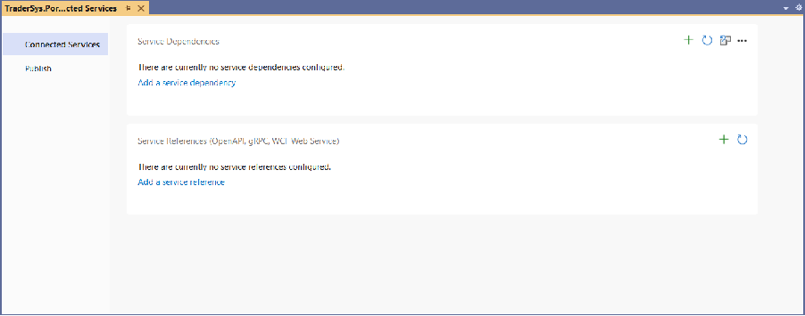
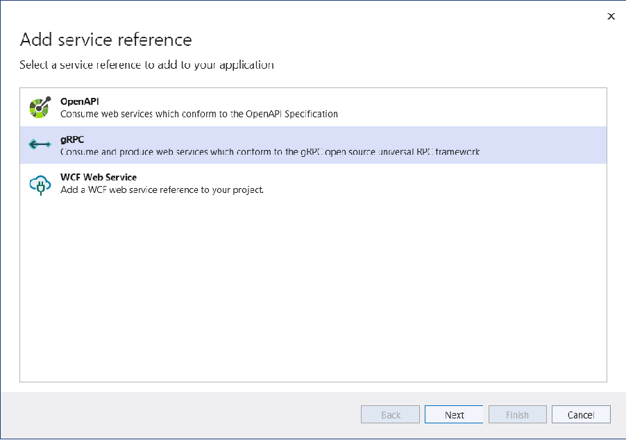
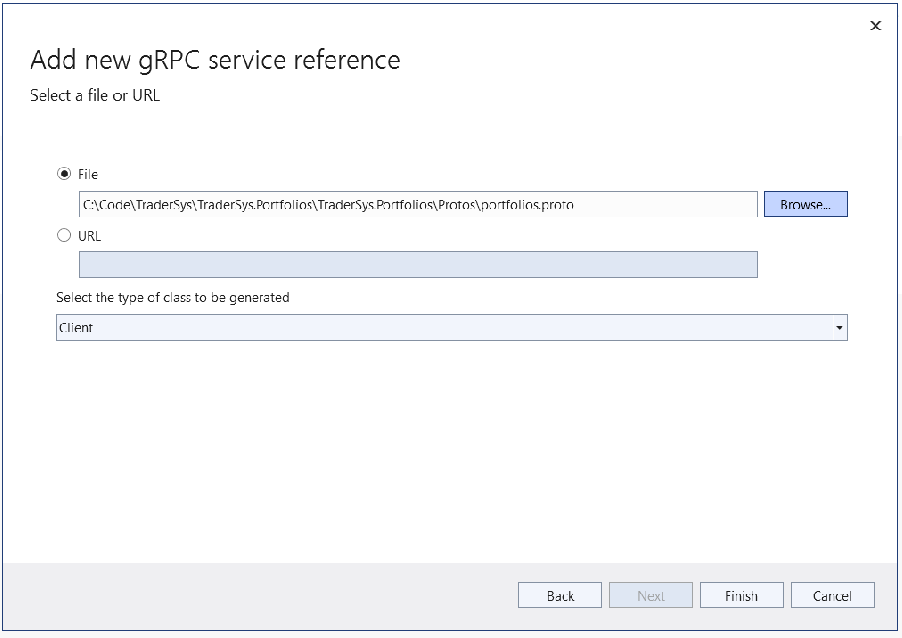
TipNotice that this dialog box also provides a URL field. If your organization maintains a web-accessible directory of .proto files, you can create clients just by setting this URL address. |
|---|
When you use the Visual Studio Add Connected Service feature, the portfolios.proto file is added to the class library project as a linked file rather than copied, so changes to the file in the service project will automatically be applied in the client project. The
Protos\portfolios.proto |
|---|
TipIf you’re not using Visual Studio or prefer to work from the command line, you can use the dotnetgrpc global tool to manage Protobuf references in a .NET gRPC project. For more information, see the dotnet-grpc documentation. |
|---|
The following code is a brief example of how to use the generated client in a console application. A more detailed exploration of the gRPC client code is at the end of this chapter.
public class Program {public async Task Main(string[] args) { GetResponse response; using (var channel = GrpcChannel.ForAddress("https://localhost:5001")) { var client = new Protos.Portfolios.PortfoliosClient(channel); response = await client.GetAsync(new GetRequest { TraderId = args[0], PortfolioId = int.Parse(args[1]) }); } foreach (var item in response.Portfolio.Items) { Console.WriteLine($"Holding {item.Holding} of Share ID {item.ShareId}."); } } } |
|---|
You’ve now migrated a basic WCF application to an ASP.NET Core gRPC service and created a client to consume the service from a .NET application. The next section will cover the more involved duplex services.
Now that you have a sense of the basic concepts, in this section, you’ll look at the more complicated streaming gRPC services.
There are multiple ways to use duplex services in Windows Communication Foundation (WCF). Some services are initiated by the client and then they stream data from the server. Other full-duplex services might involve more ongoing two-way communication, like the classic Calculator example in the WCF documentation. This chapter will take two possible WCF stock ticker implementations and migrate them to gRPC: one that uses a server streaming RPC and another one that uses a bidirectional streaming RPC.
In the sample SimpleStockTicker WCF solution, SimpleStockPriceTicker, there’s a duplex service for which the client starts the connection with a list of stock symbols, and the server uses the callback interface to send updates as they become available. The client implements that interface to respond to calls from the server.
The WCF solution is implemented as a self-hosted Net.TCP server in a .NET Framework 4.x console application.
[ServiceContract(SessionMode = SessionMode.Required, CallbackContract = typeof(ISimpleStockTickerCallback))] public interface ISimpleStockTickerService { [OperationContract(IsOneWay = true)] void Subscribe(string[] symbols); } |
|---|
The service has a single method with no return type because it uses the callback interface ISimpleStockTickerCallback to send data to the client in real time.
[ServiceContract] public interface ISimpleStockTickerCallback { [OperationContract(IsOneWay = true)] void Update(string symbol, decimal price); } |
|---|
You can find the implementations of these interfaces in the solution, along with faked external dependencies to provide test data.
The gRPC process for handling real-time data is different from the WCF process. A call from client to server can create a persistent stream, which can be monitored for messages that arrive asynchronously. Despite the difference, streams can be a more intuitive way of dealing with this data and are more relevant in modern programming, which emphasizes LINQ, Reactive Streams, functional programming, and so on.
The service definition needs two messages: one for the request and one for the stream. The service returns a stream of the StockTickerUpdate message with the stream keyword in its return declaration. We recommend that you add a Timestamp to the update to show the exact time of the price change.
option csharp_namespace = "TraderSys.SimpleStockTickerServer.Protos"; import "google/protobuf/timestamp.proto"; package SimpleStockTickerServer; service SimpleStockTicker {
rpc Subscribe (SubscribeRequest) returns (stream StockTickerUpdate);
} message SubscribeRequest {
repeated string symbols = 1;
} message StockTickerUpdate {
string symbol = 1; int32 price_cents = 2; google.protobuf.Timestamp time = 3;
}
Reuse the fake StockPriceSubscriber from the WCF project by copying the three classes from the TraderSys.StockMarket class library into a new .NET Standard class library in the target solution. To better follow best practices, add a Factory type to create instances of it, and register the IStockPriceSubscriberFactory with the ASP.NET Core dependency injection services.
The factory implementation
public interface IStockPriceSubscriberFactory { IStockPriceSubscriber GetSubscriber(string[] symbols); } public class StockPriceSubscriberFactory : IStockPriceSubscriberFactory { public IStockPriceSubscriber GetSubscriber(string[] symbols) { return new StockPriceSubscriber(symbols); } } |
|---|
Register the factory
var builder = WebApplication.CreateBuilder(args); // Additional configuration is required to successfully run gRPC on macOS. // For instructions on how to configure Kestrel and gRPC clients on macOS, visit https://go.microsoft.com/fwlink/?linkid=2099682 // Add services to the container. // Register the factory builder.Services.AddSingleton await context.Response.WriteAsync("Communication with gRPC endpoints must be made through a gRPC client. To learn how to create a client, visit: https://go.microsoft.com/fwlink/?linkid=2086909"); }); app.Run(); |
|---|
This class can now be used to implement the gRPC StockTickerService.
public class StockTickerService : Protos.SimpleStockTicker.SimpleStockTickerBase { private readonly IStockPriceSubscriberFactory _subscriberFactory; public StockTickerService(IStockPriceSubscriberFactory subscriberFactory) { _subscriberFactory = subscriberFactory; } public override async Task Subscribe(SubscribeRequest request, IServerStreamWriter var subscriber = _subscriberFactory.GetSubscriber(request.Symbols.ToArray()); subscriber.Update += async (sender, args) => await WriteUpdateAsync(responseStream, args.Symbol, args.Price); await AwaitCancellation(context.CancellationToken); } private async Task WriteUpdateAsync(IServerStreamWriter string symbol, decimal price) { try { await stream.WriteAsync(new StockTickerUpdate { Symbol = symbol, PriceCents = (int)(price * 100), Time = Timestamp.FromDateTimeOffset(DateTimeOffset.UtcNow) }); } catch (Exception e) { // Handle any errors caused by broken connection, etc. _logger.LogError($"Failed to write message: {e.Message}"); } } private static Task AwaitCancellation(CancellationToken token) { var completion = new TaskCompletionSource } } |
|---|
As you can see, although the declaration in the .proto file says the method returns a stream of StockTickerUpdate messages, it actually returns a Task. The job of creating the stream is handled by the generated code and the gRPC runtime libraries, which provide the IServerStreamWriter
Unlike a WCF duplex service, where the instance of the service class is kept alive while the connection is open, the gRPC service uses the returned task to keep the service alive. The task shouldn’t complete until the connection is closed.
The service can tell when the client has closed the connection by using the CancellationToken from the ServerCallContext. A simple static method, AwaitCancellation, is used to create a task that completes when the token is canceled.
In the Subscribe method, then, get a StockPriceSubscriber and add an event handler that writes to the response stream. Then wait for the connection to be closed before immediately disposing the subscriber to prevent it from trying to write data to the closed stream.
The WriteUpdateAsync method has a try/catch block to handle any errors that might happen when a message is written to the stream. This consideration is important in persistent connections over networks, which could be broken at any millisecond, whether intentionally or because of a failure somewhere.
Follow the same steps in the previous section to create a shareable client class library from the .proto file. In the sample, there’s a .NET console application that demonstrates how to use the client.
class Program { static async Task Main(string[] args) { using var channel = GrpcChannel.ForAddress("https://localhost:5001"); var client = new SimpleStockTicker.SimpleStockTickerClient(channel); var request = new SubscribeRequest(); request.Symbols.AddRange(args); using var stream = client.Subscribe(request); var tokenSource = new CancellationTokenSource(); var task = DisplayAsync(stream.ResponseStream, tokenSource.Token); WaitForExitKey(); tokenSource.Cancel(); await task; } } |
|---|
In this case, the Subscribe method on the generated client isn’t asynchronous. The stream is created and usable right away because its MoveNext method is asynchronous and the first time it’s called it won’t complete until the connection is alive.
The stream is passed to an asynchronous DisplayAsync method. The application then waits for the user to press a key, and then cancels the DisplayAsync method and waits for the task to complete before exiting.
NoteThis code uses the new C# 8 using declaration syntax to dispose of the stream and the channel when the Main method exits. It’s a small change, but a nice one that reduces indentations and empty lines. |
|---|
WCF uses callback interfaces to allow the server to call methods directly on the client. gRPC streams work differently. The client iterates over the returned stream and processes messages, just as though they were returned from a local method returning an IEnumerable.
The IAsyncStreamReader
static async Task DisplayAsync(IAsyncStreamReader try {await foreach (var update in stream.ReadAllAsync(token)) { Console.WriteLine($"{update.Symbol}: {update.Price}"); } } catch (RpcException e) when (e.StatusCode == StatusCode.Cancelled) { return;} catch (OperationCanceledException) { Console.WriteLine("Finished."); } } |
|---|
TipFor developers using reactive programming patterns, the section on client libraries at the end of this chapter shows how to add an extension method and classes to wrap IAsyncStreamReader |
|---|
Again, be sure to catch exceptions here because of the possibility of network failure, and because of the OperationCanceledException that will inevitably be thrown because the code is using a CancellationToken to break the loop. The RpcException type has a lot of useful information about gRPC runtime errors, including the StatusCode. For more information, see Error handling in Chapter 4.
A WCF full-duplex service allows for asynchronous, real-time messaging in both directions. In the server streaming example, the client starts a request and then receives a stream of updates. A better
version of that service would allow the client to add and remove stocks from the list without having to stop and create a new subscription. That functionality has been implemented in the FullStockTicker sample solution.
The IFullStockTickerService interface provides three methods:
• Subscribe starts the connection.
• AddSymbol adds a stock symbol to watch.
• RemoveSymbol removes a symbol from the watched list.
[ServiceContract(SessionMode = SessionMode.Required, CallbackContract = typeof(IFullStockTickerCallback))] public interface IFullStockTickerService { [OperationContract(IsOneWay = true)] void Subscribe(); [OperationContract(IsOneWay = true)] void AddSymbol(string symbol); [OperationContract(IsOneWay = true)] void RemoveSymbol(string symbol); } |
|---|
The callback interface remains the same. Implementing this pattern in gRPC is less straightforward because there are now two streams of data with messages being passed: one from client to server and another from server to client. It isn’t possible to use multiple methods to implement the add and remove operations, but you can pass more than one type of message on a single stream by using either the Any type or the oneof keyword, which were covered in Chapter 3. In a case where there’s a specific set of types that are acceptable, oneof is a better way to go. Use an ActionMessage that can hold either an AddSymbolRequest or a RemoveSymbolRequest:
message ActionMessage { oneof action { AddSymbolRequest add = 1; RemoveSymbolRequest remove = 2; } } message AddSymbolRequest { string symbol = 1; } message RemoveSymbolRequest { string symbol = 1; } |
|---|
Declare a bidirectional streaming service that takes a stream of ActionMessage messages:
service FullStockTicker { rpc Subscribe (stream ActionMessage) returns (stream StockTickerUpdate); } |
|---|
The implementation for this service is similar to that of the previous example, except the first parameter of the Subscribe method is now an IAsyncStreamReader
public override async Task Subscribe(IAsyncStreamReader using var subscriber = _subscriberFactory.GetSubscriber(); subscriber.Update += async (sender, args) => await WriteUpdateAsync(responseStream, args.Symbol, args.Price); var actionsTask = HandleActions(requestStream, subscriber, context.CancellationToken); _logger.LogInformation("Subscription started."); await AwaitCancellation(context.CancellationToken); try { await actionsTask; } catch { /* Ignored */ } _logger.LogInformation("Subscription finished."); } private async Task WriteUpdateAsync(IServerStreamWriter try {await stream.WriteAsync(new StockTickerUpdate { Symbol = symbol, PriceCents = (int)(price * 100), Time = Timestamp.FromDateTimeOffset(DateTimeOffset.UtcNow) }); } catch (Exception e) { // Handle any errors caused by broken connection, etc. _logger.LogError($"Failed to write message: {e.Message}"); } } private static Task AwaitCancellation(CancellationToken token) { var completion = new TaskCompletionSource } |
|---|
The ActionMessage class that gRPC has generated guarantees that only one of the Add and Remove properties can be set. Finding which one isn’t null is a valid way to determine which type of message is used, but there’s a better way. The code generation also created an enum ActionOneOfCase in the ActionMessage class, which looks like this:
public enum ActionOneofCase { None = 0, Add = 1, Remove = 2, } |
|---|
The property ActionCase on the ActionMessage object can be used with a switch statement to determine which field is set:
private async Task HandleActions(IAsyncStreamReader await foreach (var action in requestStream.ReadAllAsync(token)) { switch (action.ActionCase) { case ActionMessage.ActionOneofCase.None: _logger.LogWarning("No Action specified."); break; case ActionMessage.ActionOneofCase.Add: subscriber.Add(action.Add.Symbol); break; case ActionMessage.ActionOneofCase.Remove: subscriber.Remove(action.Remove.Symbol); break; default: _logger.LogWarning($"Unknown Action '{action.ActionCase}'."); break; } } } |
|---|
TipThe switch statement has a default case that logs a warning if it encounters an unknown ActionOneOfCase value. This could be useful to indicate that a client is using a later version of the .proto file that has added more actions. This is one reason why using a switch is better than testing for null on known fields. |
|---|
There’s a simple .NET WPF application that demonstrates the use of this more complex client. You can find the full application on GitHub.
The client is used in the MainWindowViewModel class, which gets an instance of the FullStockTicker.FullStockTickerClient type from dependency injection:
public class MainWindowViewModel : IAsyncDisposable, INotifyPropertyChanged {
private readonly FullStockTicker.FullStockTickerClient _client; private readonly AsyncDuplexStreamingCall
_duplexStream; private readonly CancellationTokenSource _cancellationTokenSource; private readonly Task _responseTask; private string _addSymbol;
public MainWindowViewModel(FullStockTicker.FullStockTickerClient client) {
_cancellationTokenSource = new CancellationTokenSource(); _client = client; _duplexStream = _client.Subscribe(); _responseTask = HandleResponsesAsync(_cancellationTokenSource.Token);
AddCommand = new AsyncCommand(Add, CanAdd); }
The object returned by the client.Subscribe() method is now an instance of the gRPC library type AsyncDuplexStreamingCall
The request stream is used from some WPF ICommand methods to add and remove symbols. For each operation, set the relevant field on an ActionMessage object:
private async Task Add() { if (CanAdd()) { await _duplexStream.RequestStream.WriteAsync(new ActionMessage {Add = new AddSymbolRequest {Symbol = AddSymbol}}); } } public async Task Remove(PriceViewModel priceViewModel) { await _duplexStream.RequestStream.WriteAsync(new ActionMessage {Remove = new RemoveSymbolRequest {Symbol = priceViewModel.Symbol}}); Prices.Remove(priceViewModel); } |
|---|
ImportantSetting a oneof field’s value on a message automatically clears any fields that have been set previously. |
|---|
The stream of responses is handled in an async method. The Task it returns is held to be disposed when the window is closed:
private async Task HandleResponsesAsync(CancellationToken token) {
var stream = _duplexStream.ResponseStream; try {
await foreach (var update in stream.ReadAllAsync(token)) {
var price = Prices.FirstOrDefault(p => p.Symbol.Equals(update.Symbol)); if (price == null) {
price = new PriceViewModel(this) {Symbol = update.Symbol, Price = update.PriceCents / 100m};
Prices.Add(price);
price.Price = update.PriceCents / 100m; }
} }
catch (OperationCancelledException) { } }
When the window is closed and the MainWindowViewModel is disposed (from the Closed event of MainWindow), we recommend that you properly dispose the AsyncDuplexStreamingCall object. In particular, the CompleteAsync method on the RequestStream should be called to gracefully close the stream on the server. This example shows the DisposeAsync method from the sample view-model:
public async ValueTask DisposeAsync() { try {await _duplexStream.RequestStream.CompleteAsync().ConfigureAwait(false); await _responseTask.ConfigureAwait(false); } finally {_duplexStream.Dispose(); } } |
|---|
Closing request streams enables the server to dispose of its own resources in a timely way. This improves the efficiency and scalability of services and prevents exceptions.
gRPC services provide two ways of returning datasets, or lists of objects. The Protocol Buffers message specification uses the repeated keyword for declaring lists or arrays of messages within another message. The gRPC service specification uses the stream keyword to declare a long-running persistent connection. Over that connection, multiple messages are sent, and can be processed, individually.
You can also use the stream feature for long-running temporal data such as notifications or log messages. But this chapter will consider its use for returning a single dataset.
Which you should use depends on factors such as:
• The overall size of the dataset.
• The time it took to create the dataset at either the client or server end.
• Whether the consumer of the dataset can start acting on it as soon as the first item is available, or needs the complete dataset to do anything useful.
For any dataset that’s constrained in size and that can be generated in its entirety in a short timesay, under one second—you should use a repeated field in a regular Protobuf message. For example, in an e-commerce system, to build a list of items within an order is probably quick and the list won’t be very large. Returning a single message with a repeated field is an order of magnitude faster than using stream and incurs less network overhead.
If the client needs all the data before starting to process it and the dataset is small enough to construct in memory, then consider using a repeated field. Consider it even if the creation of the dataset in memory on the server is slower.
When the message objects in your datasets are potentially very large, it’s best for you transfer them by using streaming requests or responses. It’s more efficient to construct a large object in memory, write it to the network, and then free up the resources. This approach will improve the scalability of your service.
Similarly, you should send datasets of unconstrained size over streams to avoid running out of memory while constructing them.
For datasets where the consumer can separately process each item, you should consider using a stream if it means that progress can be indicated to the user. Using a stream can improve the responsiveness of an application, but you should balance it against the overall performance of the application.
Another scenario where streams can be useful is where a message is being processed across multiple services. If each service in a chain returns a stream, then the terminal service (that is, the last one in the chain) can start returning messages. These messages can be processed and passed back along the chain to the original requestor. The requestor can either return a stream or aggregate the results into a single response message. This approach lends itself well to patterns like MapReduce.
It isn’t necessary to distribute client libraries for a gRPC application. You can create a shared library of
.proto files within your organization, and other teams can use those files to generate client code in their own projects. But if you have a private NuGet repository and many other teams are using .NET, you can create and publish client NuGet packages as part of your service project. This approach can be a good way of sharing and promoting your service.
One advantage of distributing a client library is that you can enhance the generated gRPC and Protobuf classes with helpful “convenience” methods and properties. In the client code, as in the server, all the classes are declared as partial, so you can extend them without editing the generated code. This behavior means it’s easy to add constructors, methods, and calculated properties to the basic types.
CautionYou shouldn’t use custom code to provide essential functionality. You don’t want to restrict that essential functionality to .NET teams that use the shared library, and not provide it to teams that use other languages or platforms, such as Python or Java. |
|---|
Ensure that as many teams as possible can access your gRPC service. The best way to do this functionality is to share .proto files so developers can generate their own clients. This approach is
particularly true in a multi-platform environment, where different teams frequently use different programming languages and frameworks, or where your API is externally accessible.
There are two commonly used interfaces in .NET for dealing with streams of objects: IEnumerable and IObservable. Starting with .NET Core 3.0 and C# 8.0, there’s an IAsyncEnumerable interface for processing streams asynchronously, and an await foreach syntax for using the interface. This section presents reusable code for applying these interfaces to gRPC streams.
With the .NET gRPC client libraries, there’s a ReadAllAsync extension method for IAsyncStreamReader
The IObservable
This code is longer than the IAsyncEnumerable
namespace Grpc.Core; public class GrpcStreamObservable private readonly IAsyncStreamReader public GrpcStreamObservable(IAsyncStreamReader { _reader = reader ?? throw new ArgumentNullException(nameof(reader)); _token = token; _used = 0; } public IDisposable Subscribe(IObserver Interlocked.Exchange(ref _used, 1) == 0 ? new GrpcStreamSubscription } |
|---|
ImportantThis observable implementation allows the Subscribe method to be called only once, because having multiple subscribers trying to read from the stream would result in chaos. There are operators, such as Replay in the System.Reactive.Linq, that enable buffering and repeatable sharing of observables, which can be used with this implementation. |
|---|
The GrpcStreamSubscription class handles the enumeration of the IAsyncStreamReader: public class GrpcStreamSubscription
private readonly IAsyncStreamReader
private readonly CancellationTokenSource _tokenSource; private readonly Task _task; private bool _completed; public GrpcStreamSubscription(IAsyncStreamReader
CancellationToken token = default) {
_reader = reader ?? throw new ArgumentNullException(nameof(reader)); _observer = observer ?? throw new ArgumentNullException(nameof(observer));
_tokenSource = new CancellationTokenSource(); token.Register(_tokenSource.Cancel);
_task = Run(_tokenSource.Token);
} private async Task Run(CancellationToken token) {
while (!token.IsCancellationRequested) {
if (!await _reader.MoveNext(token)) break;
} catch (RpcException e) when (e.StatusCode == Grpc.Core.StatusCode.NotFound) {
} catch (OperationCanceledException) {
} catch (Exception e) {
_observer.OnError(e); _completed = true; return;
} _observer.OnNext(_reader.Current);
} _completed = true;
_observer.OnCompleted();
} public void Dispose() {
if (!_completed && !_tokenSource.IsCancellationRequested) {
_tokenSource.Cancel(); }
_tokenSource.Dispose(); _task.Dispose();
}
} All that is required now is a simple extension method to create the observable from the stream reader.
namespace Grpc.Core; public static class AsyncStreamReaderObservableExtensions { public static IObservable } |
|---|
The IAsyncEnumerable and IObservable models are both well-supported and well-documented ways of dealing with asynchronous streams of data in .NET. gRPC streams map well to both paradigms, offering close integration with .NET, and reactive and asynchronous programming styles.
CHAPTER |
|---|
6
Security in gRPC applications
In any real-world scenario, securing applications and services are essential. Security covers three key areas:
• Encrypting network traffic to prevent malicious hackers from intercepting it.
• Authenticating clients and servers to establish identity and trust.
• Authorizing clients to control access to systems and apply permissions based on identity.
Note Authentication is concerned with establishing the identity of a client or server. Authorization is concerned with determining whether a client has permission to access a resource or issue a command. |
|---|
This chapter will cover the facilities for authentication and authorization in gRPC for ASP.NET Core. It will also discuss network security through TLS encrypted connections.
In Windows Communication Foundation (WCF), authentication and authorization were handled in different ways, depending on the transports and bindings being used. WCF supported various WS-* security standards. It also supported Windows authentication for HTTP services running in IIS or NetTCP services between Windows systems.
gRPC authentication and authorization works on two levels:
• Call-level authentication/authorization is usually handled through tokens that are applied in metadata when the call is made.
• Channel-level authentication uses a client certificate that’s applied at the connection level. It can also include call-level authentication/authorization credentials to be applied to every call on the channel automatically.
You can use either or both of these mechanisms to help secure your service.
The ASP.NET Core implementation of gRPC supports authentication and authorization through most of the standard ASP.NET Core mechanisms:
• Call authentication
– Azure Active Directory
– IdentityServer
– JWT Bearer Token
– OAuth 2.0
– OpenID Connect
– WS-Federation
• Channel authentication
– Client certificate
The call authentication methods are all based on tokens. The only real difference is how the tokens are generated and the libraries that are used to validate the tokens in the ASP.NET Core service.
For more information, see the Authentication and authorization article.
NoteWhen you’re using gRPC over a TLS-encrypted HTTP/2 connection, all traffic between clients and servers is encrypted, even if you don’t use channel-level authentication. |
|---|
This chapter will show how to apply call credentials and channel credentials to a gRPC service. It will also show how to use credentials from a .NET gRPC client to authenticate with the service.
Call credentials are all based on a token passed in metadata with each request.
ASP.NET Core supports WS-Federation using the WsFederation NuGet package. WS-Federation is the closest available alternative to Windows Authentication, which isn’t supported over HTTP/2. Users are authenticated by using Active Directory Federation Services (AD FS), which provides a token that can be used to authenticate with ASP.NET Core.
For more information on how to get started with this authentication method, see Authenticate users with WS-Federation in ASP.NET Core.
The JSON Web Token (JWT) standard provides a way to encode information about a user and their claims in an encoded string. It also provides a way to sign that token, so that the consumer can verify the integrity of the token by using public key cryptography. You can use various services, such as IdentityServer4, to authenticate users and generate OpenID Connect (OIDC) tokens to use with gRPC and HTTP APIs.
ASP.NET Core 7.0 can handle JWTs by using the JWT Bearer package. The configuration is exactly the same for a gRPC application as it is for an ASP.NET Core MVC application. Here, we’ll focus on JWT Bearer tokens, because they’re easier to develop with than WS-Federation.
The JWT Bearer package isn’t included in ASP.NET Core 7.0 by default. Install the Microsoft.AspNetCore.Authentication.JwtBearer NuGet package in your app.
Add the Authentication service in the Program.cs class, and configure the JWT Bearer handler:
// // builder.Services.AddGrpc(); var signingKey = ObtainSigningKeySomehow(); builder.Services.AddAuthentication(JwtBearerDefaults.AuthenticationScheme) .AddJwtBearer(options => { options.TokenValidationParameters = new TokenValidationParameters { ValidateAudience = false, ValidateIssuer = false, ValidateActor = false, ValidateLifetime = true, IssuerSigningKey = signingKey }; }); // // |
|---|
The IssuerSigningKey property requires an implementation of Microsoft.IdentityModels.Tokens.SecurityKey with the cryptographic data necessary to validate the signed tokens. Store this token securely in a secrets server, like Azure Key Vault.
Next, add the Authorization service, which controls access to the system:
services.AddAuthorization(options => { options.AddPolicy(JwtBearerDefaults.AuthenticationScheme, policy => { policy.AddAuthenticationSchemes(JwtBearerDefaults.AuthenticationScheme); policy.RequireClaim(ClaimTypes.Name); }); }); |
|---|
TipAuthentication and authorization are two separate steps. You use authentication to determine the user’s identity. You use authorization to decide whether that user is allowed to access various parts of the system. |
|---|
Now add the authentication and authorization middleware to the ASP.NET Core pipeline in the Program.cs:
// app.UseRouting(); // Authenticate, then Authorize app.UseAuthentication(); app.UseAuthorization(); app.UseEndpoints(endpoints => { endpoints.MapGrpcService } |
|---|
Finally, apply the [Authorize] attribute to any services or methods to be secured, and use the User property from the underlying HttpContext to verify permissions.
[Authorize] public override async Task if (!TryValidateUser(request.TraderId, context.GetHttpContext().User)) { throw new RpcException(new Status(StatusCode.PermissionDenied, "Denied.")); } var portfolio = await _repository.GetAsync(traderId, request.PortfolioId); return new GetResponse { Portfolio = Portfolio.FromRepositoryModel(portfolio) }; } |
|---|
After you’ve obtained a JWT token from an identity server, you can use it to authenticate gRPC calls from the client by adding it as a metadata header on the call, as follows:
public async Task ShowPortfolioAsync(int portfolioId) { var headers = new Grpc.Core.Metadata { { "Authorization", $"Bearer {_userToken}" } }; var request = new GetRequest { TraderId = _userId, PortfolioId = portfolioId }; var response = await _portfoliosClient.GetAsync(request, headers); // Display portfolio } |
|---|
Now you’ve secured your gRPC service by using JWT bearer tokens as call credentials. A version of the portfolios sample gRPC application with authentication and authorization added is on GitHub.
As the name implies, channel credentials are attached to the underlying gRPC channel. The standard form of channel credentials uses client certificate authentication. In this process, the client provides a TLS certificate when it’s making the connection, and then the server verifies this certificate before allowing any calls to be made.
You can combine channel credentials with call credentials to provide comprehensive security for a gRPC service. The channel credentials prove that the client application is allowed to access the service, and the call credentials provide information about the person who is using the client application.
Client certificate authentication works for gRPC the same way it works for ASP.NET Core. For more information, see Configure certificate authentication in ASP.NET Core.
For development purposes you can use a self-signed certificate, but for production you should use a proper HTTPS certificate signed by a trusted authority.
Configure certificate authentication both at the host level (for example, on the Kestrel server), and in the ASP.NET Core pipeline.
You can configure Kestrel (the ASP.NET Core HTTP server) to require a client certificate, and optionally to carry out some validation of the supplied certificate, before accepting incoming connections. You specify this configuration in the Program.cs:
var builder = WebApplication.CreateBuilder(args); var serverCert = ObtainServerCertificate(); builder.WebHost.UseKestrel(kestrelServerOptions => { kestrelServerOptions.ConfigureHttpsDefaults(opt => { opt.ClientCertificateMode = ClientCertificateMode.RequireCertificate; // Verify that client certificate was issued by same CA as server certificate opt.ClientCertificateValidation = (certificate, chain, errors) => certificate.Issuer == serverCert.Issuer; }); }); |
|---|
The ClientCertificateMode.RequireCertificate setting causes Kestrel to immediately reject any connection request that doesn’t provide a client certificate, but this setting by itself won’t validate a certificate that is provided. Add the ClientCertificateValidation callback to enable Kestrel to validate the client certificate at the point the connection is made, before the ASP.NET Core pipeline is engaged. (In this case, the callback ensures that it was issued by the same Certificate Authority as the server certificate.)
The Microsoft.AspNetCore.Authentication.Certificate NuGet package provides certificate authentication.
Add the certificate authentication service in the Program.cs, and add authentication and authorization to the ASP.NET Core pipeline.
// builder.Services.AddAuthentication(CertificateAuthenticationDefaults.AuthenticationScheme) .AddCertificate(options => { options.AllowedCertificateTypes = CertificateTypes.Chained; options.RevocationMode = X509RevocationMode.NoCheck; options.Events = new CertificateAuthenticationEvents { OnCertificateValidated = DevelopmentModeCertificateHelper.Validate }; }); builder.Services.AddAuthorization(); builder.Services.AddGrpc(); var app = builder.Build(); // Configure the HTTP request pipeline. app.UseRouting(); app.UseAuthentication(); app.UseEndpoints(endpoints => { endpoints.MapGrpcService |
|---|
With the Grpc.Net.Client package, you configure certificates on an HttpClient instance that is provided to the GrpcChannel used for the connection.
Load a client certificate from a .PFX file A certificate can be loaded from a .pfx file. class Program {
static async Task Main(string[] args) {
// Assume path to a client .pfx file and password are passed from command line // On Windows this would probably be a reference to the Certificate Store var cert = new X509Certificate2(args[0], args[1]); var handler = new HttpClientHandler(); handler.ClientCertificates.Add(cert); var httpClient = new HttpClient(handler); var channel = GrpcChannel.ForAddress("https://localhost:5001/", new
GrpcChannelOptions {
HttpClient = httpClient
});
var grpc = new Greeter.GreeterClient(channel); var response = await grpc.SayHelloAsync(new HelloRequest { Name = "Bob" }); System.Console.WriteLine(response.Message);
} }
Load a client certificate from certificate and private key .PEM files A certificate can be loaded from a certificate and private key .pem file.
class Program { static async Task Main(string[] args) { // Assume path to a certificate and private key .pem files are passed from command line string certificatePem = File.ReadAllText(args[0]); string privateKeyPem = File.ReadAllText(args[1]); var cert = X509Certificate2.CreateFromPem(certificatePem, privateKeyPem); var handler = new HttpClientHandler(); handler.ClientCertificates.Add(cert); using HttpClient httpClient = new(handler); var channel = GrpcChannel.ForAddress("https://localhost:5001/", new GrpcChannelOptions { HttpClient = httpClient }); var grpc = new Greeter.GreeterClient(channel); var response = await grpc.SayHelloAsync(new HelloRequest { Name = "Bob" }); System.Console.WriteLine(response.Message); } } |
|---|
NoteDue to an internal Windows bug as documented here, you’ll need to apply the following workaround if the certificate is created from a certificate and private key PEM data. ]{custom-style=Code}`csharp X509Certificate2 cert = X509Certificate2.CreateFromPem(certificatePem, rsaPrivateKeyPem); if (RuntimeInformation.IsOSPlatform(OSPlatform.Windows)) { var originalCert = cert; cert = new X509Certificate2(cert.Export(X509ContentType.Pkcs12)); originalCert.Dispose(); } [` |
|---|
You can configure your server to use both certificate and token authentication. To do this, apply the certificate changes to the Kestrel server, and use the JWT bearer middleware in ASP.NET Core.
To provide both ChannelCredentials and CallCredentials on the client, use the ChannelCredentials.Create method to apply the call credentials. You still need to apply certificate authentication by using the HttpClient instance. If you pass any arguments to the SslCredentials
constructor, the internal client code throws an exception. The SslCredentials parameter is only included in the Grpc.Net.Client package’s Create method to maintain compatibility with the Grpc.Core package.
var handler = new HttpClientHandler(); handler.ClientCertificates.Add(cert); var httpClient = new HttpClient(handler); var callCredentials = CallCredentials.FromInterceptor(((context, metadata) => { metadata.Add("Authorization", $"Bearer {_token}"); return Task.CompletedTask; })); var channelCredentials = ChannelCredentials.Create(new SslCredentials(), callCredentials); var channel = GrpcChannel.ForAddress("https://localhost:5001/", new GrpcChannelOptions { HttpClient = httpClient, Credentials = channelCredentials }); var grpc = new Portfolios.PortfoliosClient(channel); |
|---|
TipYou can use the ChannelCredentials.Create method for a client without certificate authentication. This is a useful way to pass token credentials with every call made on the channel. |
|---|
A version of the FullStockTicker sample gRPC application with certificate authentication added is on GitHub.
The network security model for Windows Communication Foundation (WCF) is extensive and complex. It includes transport-level security by using HTTPS or TLS-over-TCP, and message-level security by using the WS-Security specification to encrypt individual messages.
gRPC leaves secure networking to the underlying HTTP/2 protocol, which you can secure by using TLS certificates.
Web browsers insist on using TLS connections for HTTP/2, but most programmatic clients, including
.NET’s HttpClient, can use HTTP/2 over unencrypted connections. For public APIs, you should always use TLS connections, and provide valid certificates for your services from a proper SSL authority. LetsEncrypt provides free, automated SSL certificates, and most hosting infrastructure today supports the LetsEncrypt standard with common plug-ins or extensions. For internal services across a corporate network, you should still consider using TLS to secure network traffic to and from your gRPC services.
CHAPTER |
|---|
7
gRPC in production
You can run ASP.NET Core 7.0 applications, including gRPC services, on Windows, on Linux, and in containers using modern platforms like Docker and Kubernetes. This chapter explores the various options for running your gRPC services in production, and looks at monitoring and logging options to ensure the optimal operation of systems.
Although ASP.NET Core 7.0 applications can be hosted in IIS on Windows Server, currently it isn’t possible to host a gRPC application in IIS because some of the HTTP/2 functionality isn’t supported. This functionality is a goal for a future update to Windows Server.
You can run your application as a Windows service. Or you can run it as a Linux service controlled by systemd, because of features introduced in the .NET 6 hosting extensions.
To configure your ASP.NET Core application to run as a Windows service, install the Microsoft.Extensions.Hosting.WindowsServices package from NuGet. Then add a call to UseWindowsService to the CreateHostBuilder method in Program.cs.
Host.CreateDefaultBuilder(args) .UseWindowsService() ... |
|---|
NoteIf the application isn’t running as a Windows service, the UseWindowsService method doesn’t do anything. |
|---|
Now publish your application by using one of these methods:
• From Visual Studio by right-clicking the project and selecting Publish on the shortcut menu.
• From the .NET CLI.
When you publish a .NET application, you can choose to create a framework-dependent deployment or a self-contained deployment. Framework-dependent deployments require the .NET Shared Runtime to be installed on the host where they’re run. Self-contained deployments are published with a complete copy of the .NET runtime and framework and can be run on any host. For more information,
including the advantages and disadvantages of each approach, see the .NET application deployment documentation.
To publish a self-contained build of the application that doesn’t require the .NET 5 runtime to be installed on the host, specify the runtime to be included with the application. Use the -r (or --runtime) flag.
dotnet publish -c Release -r win-x64 -o ./publish |
|---|
To publish a framework-dependent build, omit the -r flag.
dotnet publish -c Release -o ./publish |
|---|
Copy the complete contents of the publish directory to an installation folder. Then, use the sc tool to create a Windows service for the executable file.
sc create MyService binPath=C:\MyService\MyService.exe |
|---|
The UseWindowsService method automatically adds a logging provider that writes log messages to the Windows event log. You can configure logging for this provider by adding an EventLog entry to the Logging section of appsettings.json or another configuration source.
You can override the source name used in the event log by setting a SourceName property in these settings. If you don’t specify a name, the default application name (normally the executable assembly name) will be used.
More information on logging is at the end of this chapter.
To configure your ASP.NET Core application to run as a Linux service (or daemon in Linux parlance), install the Microsoft.Extensions.Hosting.Systemd package from NuGet. Then add a call to UseSystemd to the CreateHostBuilder method in Program.cs.
public static IHostBuilder CreateHostBuilder(string[] args) => Host.CreateDefaultBuilder(args) .UseSystemd() // Enable running as a Systemd service .ConfigureServices((hostContext, services) => { ... }); |
|---|
Note If the application isn’t running as a Linux service, the UseSystemd method doesn’t do anything. |
|---|
Now publish your application. The application can be either framework dependent or self-contained for the relevant Linux runtime (for example, linux-x64). You can publish by using one of these methods:
• From Visual Studio by right-clicking the project and selecting Publish on the shortcut menu.
• From the .NET CLI, by using the following command: dotnet publish -c Release -r linux-x64 -o ./publish
Copy the complete contents of the publish directory to an installation folder on the Linux host. Registering the service requires a special file, called a unit file, to be added to the /etc/systemd/system directory. You’ll need root permission to create a file in this folder. Name the file with the identifier that you want systemd to use and the .service extension. For example, use /etc/systemd/system/myapp.service.
The service file uses INI format, as shown in this example:
[Unit] Description=My gRPC Application [Service] Type=notify ExecStart=/usr/sbin/myapp [Install] WantedBy=multi-user.target |
|---|
The Type=notify property tells systemd that the application will notify it on startup and shutdown. The WantedBy=multi-user.target setting will cause the service to start when the Linux system reaches “runlevel 2,” which means a nongraphical, multi-user shell is active.
Before systemd will recognize the service, it needs to reload its configuration. You control systemd by using the systemctl command. After reloading, use the status subcommand to confirm that the application has registered successfully.
sudo systemctl daemon-reload sudo systemctl status myapp |
|---|
If you’ve configured the service correctly, you’ll get the following output: myapp.service - My gRPC Application
Loaded: loaded (/etc/systemd/system/myapp.service; disabled; vendor preset: enabled) Active: inactive (dead)
Use the start command to start the service.
sudo systemctl start myapp.service |
|---|
Tip The .service extension is optional when you’re using systemctl start. |
|---|
To tell systemd to start the service automatically on system startup, use the enable command.
sudo systemctl enable myapp |
|---|
The Linux equivalent of the Windows event log is journald, a structured logging system service that’s part of systemd. Log messages written to the standard output by a Linux daemon are automatically written to journald. To configure logging levels, use the Console section of the logging configuration. The UseSystemd host builder method automatically configures the console output format to suit the journal.
Because journald is the standard for Linux logs, a variety of tools integrate with it. You can easily route logs from journald to an external logging system. Working locally on the host, you can use the journalctl command to view logs from the command line.
sudo journalctl -u myapp |
|---|
TipIf you have a GUI environment available on your host, a few graphical log viewers are available for Linux, such as QJournalctl and gnome-logs. |
|---|
To learn more about querying the systemd journal from the command line by using journalctl, see the manpages.
When you’re running a gRPC application in production, you should use a TLS certificate from a trusted certificate authority (CA). This CA might be a public CA, or an internal one for your organization.
On Windows hosts, you can load the certificate from a secure certificate store by using the X509Store class. You can also use the X509Store class with the OpenSSL key store on some Linux hosts.
You can also create certificates by using one of the X509Certificate2 constructors, from either:
• A file, such as a .pfx file protected by a strong password
• Binary data retrieved from a secure storage service such as Azure Key Vault
You can configure Kestrel to use a certificate in two ways: from configuration or in code. Set HTTPS certificates by using configuration
The configuration approach requires setting the password and path to the certificate .pfx file in the Kestrel configuration section. In appsettings.json, that looks like this:
{ "Kestrel": { "Certificates": { "Default": { "Path": "cert.pfx", "Password": "DO NOT STORE PLAINTEXT PASSWORDS IN APPSETTINGS FILES" } } } } |
|---|
Provide the password by using a secure configuration source such as Azure Key Vault or Hashicorp Vault.
Important Don’t store unencrypted passwords in configuration files. |
|---|
To configure HTTPS on Kestrel in code, use the ConfigureKestrel method on IWebHostBuilder in the Program class.
public static IHostBuilder CreateHostBuilder(string[] args) => Host.CreateDefaultBuilder(args) .ConfigureWebHostDefaults(webBuilder => { webBuilder.ConfigureKestrel(kestrel => { kestrel.ConfigureHttpsDefaults(https => { https.ServerCertificate = new X509Certificate2("mycert.pfx", "password"); }); }); }); |
|---|
Again, be sure to store the password for the .pfx file in, and retrieve it from, a secure configuration source.
This section covers the creation of Docker images for ASP.NET Core gRPC applications, ready to run in Docker, Kubernetes, or other container environments. The sample application used, with an ASP.NET Core MVC web app and a gRPC service, is available on the dotnet-architecture/grpc-for-wcfdevelopers repository on GitHub.
Microsoft provides a range of base images for building and running .NET applications. To create an ASP.NET Core 7.0 image, you use two base images:
• An SDK image to build and publish the application.
• A runtime image for deployment.
Image |
Description |
|---|---|
mcr.microsoft.com/dotnet/sd k |
For building applications with docker build. Not to be used in production. |
mcr.microsoft.com/dotnet/as pnet |
Contains the runtime and ASP.NET Core dependencies. For production. |
Image tag(s) |
Linux |
Notes |
|---|---|---|
7.0-bullseye-slim, 7.0 |
Debian 11 |
The default image if no OS variant is specified. |
7.0-alpine |
Alpine 3.17 |
Alpine base images are much smaller than Debian or Ubuntu ones. |
ImportantMake sure you use the same variant of Linux for the build and the runtime. Applications built and published on one variant might not work on another. |
|---|
A Docker image is defined by a Dockerfile. This Dockerfile is a text file that contains all the commands needed to build the application and install any dependencies that are required for either building or running the application. The following example shows the simplest Dockerfile for an ASP.NET Core 7.0 application:
FROM mcr.microsoft.com/dotnet/sdk:7.0 as build WORKDIR /src COPY ./StockKube.sln . COPY ./src/StockData/StockData.csproj ./src/StockData/ COPY ./src/StockWeb/StockWeb.csproj ./src/StockWeb/ RUN dotnet restore COPY . . RUN dotnet publish --no-restore -c Release -o /published src/StockData/StockData.csproj FROM mcr.microsoft.com/dotnet/aspnet:7.0 as runtime # Uncomment the line below if running with HTTPS # ENV ASPNETCORE_URLS=https://+:443 WORKDIR /app COPY --from=build /published . ENTRYPOINT [ "dotnet", "StockData.dll" ] |
|---|
The Dockerfile has two parts: the first uses the sdk base image to build and publish the application; the second creates a runtime image from the aspnet base. This is because the sdk image is around 900 MB, compared to around 200 MB for the runtime image, and most of its contents are unnecessary at run time.
The build steps
Step |
Description |
|---|---|
FROM ... |
Declares the base image and assigns the builder alias. |
WORKDIR /src |
Creates the /src directory and sets it as the current working directory. |
COPY . . |
Copies everything below the current directory on the host into the current directory on the image. |
RUN dotnet restore |
Restores any external packages (ASP.NET Core 3.0 framework is preinstalled with the SDK). |
RUN dotnet publish ... |
Builds and publishes a Release build. The --runtime flag isn’t required. |
Step |
Description |
|---|---|
FROM ... |
Declares a new base image. |
WORKDIR /app |
Creates the /app directory and sets it as the current working directory. |
COPY --from=builder ... |
Copies the published application from the previous image, by using the builder alias from the first FROM line. |
ENTRYPOINT [ ... ] |
Sets the command to run when the container starts. The dotnet command in the runtime image can only run DLL files. |
Microsoft base images for Docker set the ASPNETCORE_URLS environment variable to http://+:80, meaning that Kestrel runs without HTTPS on that port. If you’re using HTTPS with a custom certificate (as described in Self-hosted gRPC applications), you should override this configuration. Set the environment variable in the runtime image creation part of your Dockerfile.
# Runtime image creation FROM mcr.microsoft.com/dotnet/aspnet:7.0 ENV ASPNETCORE_URLS=https://+:443 |
|---|
The .dockerignore file Much like .gitignore files that exclude certain files and directories from source control, the
.dockerignore file can be used to exclude files and directories from being copied to the image during build. This file not only saves time copying, but can also avoid some errors that arise from having the obj directory from your PC copied into the image. At a minimum, you should add entries for bin and obj to your .dockerignore file.
bin/ obj/
For a StockKube.sln solution containing two different applications StockData and StockWeb, it’s simplest to put the Dockerfile for each one of them in the base directory. In that case, to build the image, use the following docker build command from the same directory where .sln file resides.
docker build -t stockdata:1.0.0 -f ./src/StockData/Dockerfile .
The confusingly named --tag flag (which can be shortened to -t) specifies the whole name of the image, including the actual tag if specified. The . at the end specifies the context in which the build will be run; the current working directory for the COPY commands in the Dockerfile.
If you have multiple applications within a single solution, you can keep the Dockerfile for each application in its own folder, beside the .csproj file. You should still run the docker build command from the base directory to ensure that the solution and all the projects are copied into the image. You can specify a Dockerfile below the current directory by using the --file (or -f) flag. docker build -t stockdata:1.0.0 -f ./src/StockData/Dockerfile .
To run the image in your local Docker instance, use the docker run command.
docker run -ti -p 5000:80 stockdata:1.0.0 |
|---|
The -ti flag connects your current terminal to the container’s terminal, and runs in interactive mode. The -p 5000:80 publishes (links) port 80 on the container to port 5000 on the localhost network interface.
After you’ve verified that the image works, push it to a Docker registry to make it available on other systems. Internal networks will need to provision a Docker registry. This activity can be as simple as running Docker’s own registry image (the Docker registry runs in a Docker container), but there are various more comprehensive solutions available. For external sharing and cloud use, there are various managed registries available, such as Azure Container Registry or Docker Hub.
To push to Docker Hub, prefix the image name with your user or organization name.
docker tag stockdata:1.0.0 |
|---|
To push to a private registry, prefix the image name with the registry host name and the organization name.
docker tag stockdata |
|---|
After the image is in a registry, you can deploy it to individual Docker hosts, or to a container orchestration engine like Kubernetes.
Although it’s possible to run containers manually on Docker hosts, for reliable production systems it’s better to use a container orchestration engine to manage multiple instances running across several servers in a cluster. There are various container orchestration engines available, including Kubernetes, Docker Swarm, and Apache Mesos. But of these engines, Kubernetes is far and away the most widely used, so it will be the focus of this chapter.
Kubernetes includes the following functionality:
• Scheduling runs containers on multiple nodes within a cluster, ensuring balanced usage of the available resource, keeping containers running if there are outages, and handling rolling updates to new versions of images or new configurations.
• Health checks monitor containers to ensure continued service.
• DNS & service discovery handles routing between services within a cluster.
• Ingress exposes selected services externally and generally provides load-balancing across instances of those services.
• Resource management attaches external resources like storage to containers.
This chapter will detail how to deploy an ASP.NET Core gRPC service and a website that consumes the service into a Kubernetes cluster. The sample application used is available in the dotnetarchitecture/grpc-for-wcf-developers repository on GitHub.
Kubernetes uses desired state configuration: the API is used to describe objects like Pods, Deployments, and Services, and the Control Plane takes care of implementing the desired state across all the nodes in a cluster. A Kubernetes cluster has a Master node that runs the Kubernetes API, which you can communicate with programmatically or by using the kubectl command-line tool. kubectl can create and manage objects through command-line arguments, but it works best with YAML files that contain declaration data for Kubernetes objects.
Kubernetes YAML files Every Kubernetes YAML file will have at least three top-level properties:
apiVersion: v1 kind: Namespace metadata: # Object properties |
|---|
The apiVersion property is used to specify which version (and which API) the file is intended for. The kind property specifies the kind of object the YAML represents. The metadata property contains object properties like name, namespace, and labels.
Most Kubernetes YAML files will also have a spec section that describes the resources and configuration necessary to create the object.
Pods are the basic units of execution in Kubernetes. They can run multiple containers, but they’re also used to run single containers. The pod also includes any storage resources required by the containers, and the network IP address.
Services are meta-objects that describe Pods (or sets of Pods) and provide a way to access them within the cluster, such as mapping a service name to a set of pod IP addresses by using the cluster DNS service.
Deployments are the desired state objects for Pods. If you create a pod manually, it won’t be restarted when it terminates. Deployments are used to tell the cluster which Pods, and how many replicas of those Pods, should be running at the present time.
Pods, Services, and Deployments are just three of the most basic object types. There are dozens of other object types that are managed by Kubernetes clusters. For more information, see the Kubernetes Concepts documentation.
Kubernetes clusters are designed to scale to hundreds or thousands of nodes and to run similar numbers of services. To avoid clashes between object names, namespaces are used to group objects together as part of larger applications. Kubernetes’s own services run in a default namespace. All user objects should be created in their own namespaces to avoid potential clashes with default objects or other tenants in the cluster.
If you’re running Docker Desktop for Windows or Docker Desktop for Mac, Kubernetes is already available. Just enable it in the Kubernetes section of the Settings window:
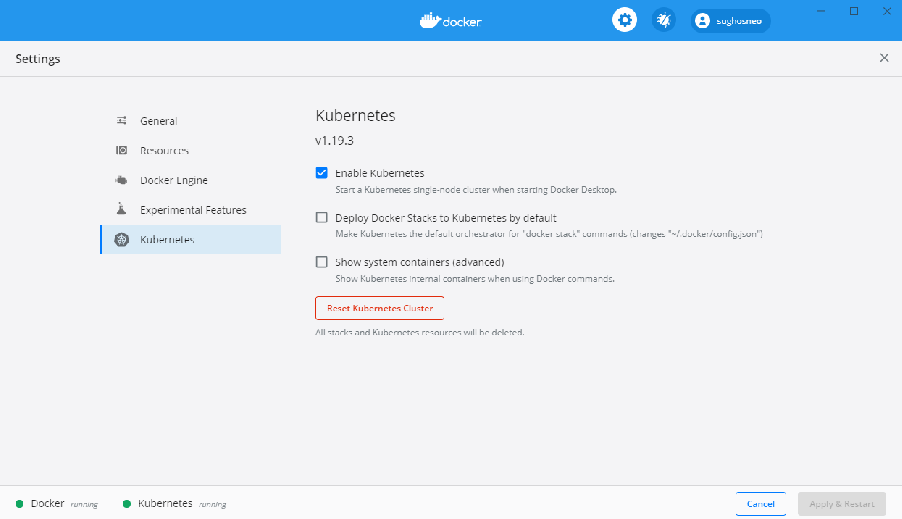
To run a local Kubernetes cluster on Linux, consider minikube, or MicroK8s if your Linux distribution supports snaps.
To confirm that your cluster is running and accessible, run the kubectl version command:
kubectl version Client Version: version.Info{Major:"1", Minor:"19", GitVersion:"v1.19.3", GitCommit:"1e11e4a2108024935ecfcb2912226cedeafd99df", GitTreeState:"clean", BuildDate:"2020-10-14T12:50:19Z", GoVersion:"go1.15.2", Compiler:"gc", Platform:"windows/amd64"} Server Version: version.Info{Major:"1", Minor:"19", GitVersion:"v1.19.3", GitCommit:"1e11e4a2108024935ecfcb2912226cedeafd99df", GitTreeState:"clean", BuildDate:"2020-10-14T12:41:49Z", GoVersion:"go1.15.2", Compiler:"gc", Platform:"linux/amd64"} |
|---|
In this example, both the kubectl CLI and the Kubernetes server are running version 1.14.6. Each version of kubectl is supposed to support the previous and next version of the server, so kubectl 1.14 should work with server versions 1.13 and 1.15 as well.
The sample application has a kube directory that contains three YAML files. The namespace.yml file declares a custom namespace: stocks. The stockdata.yml file declares the Deployment and the Service for the gRPC application, and the stockweb.yml file declares the Deployment and Service for an ASP.NET Core 7.0 MVC web application that consumes the gRPC service.
To use a YAML file with kubectl, run the apply -f command:
kubectl apply -f object.yml |
|---|
The apply command will check the validity of the YAML file and display any errors received from the API, but doesn’t wait until all the objects declared in the file have been created because this step can
take some time. Use the kubectl get command with the relevant object types to check on object creation in the cluster.
The namespace declaration Namespace declaration is simple and requires only assigning a name:
apiVersion: v1 kind: Namespace metadata: name: stocks |
|---|
Use kubectl to apply the namespace.yml file and to confirm the namespace is created successfully:
> kubectl apply -f namespace.yml namespace/stocks created > kubectl get namespaces NAME STATUS AGE stocks Active 2m53s |
|---|
The StockData application The stockdata.yml file declares two objects: a Deployment and a Service.
The Deployment part of the YAML file provides the spec for the deployment itself, including the number of replicas required, and a template for the Pod objects to be created and managed by the deployment. Note that Deployment objects are managed by the apps API, as specified in apiVersion, rather than the main Kubernetes API.
apiVersion: apps/v1 kind: Deployment metadata: name: stockdata namespace: stocks spec: selector: matchLabels: run: stockdata replicas: 1 template: metadata: labels: run: stockdata spec: containers: - name: stockdata image: stockdata:1.0.0 imagePullPolicy: Never resources: limits: cpu: 100m memory: 100Mi ports: - containerPort: 80 |
|---|
The spec.selector property is used to match running Pods to the Deployment. The Pod’s metadata.labels property must match the matchLabels property or the API call will fail.
The template.spec section declares the container to be run. When you’re working with a local Kubernetes cluster, such as the one provided by Docker Desktop, you can specify images that were built locally as long as they have a version tag.
ImportantBy default, Kubernetes will always check for and try to pull a new image. If it can’t find the image in any of its known repositories, the Pod creation will fail. To work with local images, set the imagePullPolicy to Never. |
|---|
The ports property specifies which container ports should be published on the Pod. The stockservice image runs the service on the standard HTTP port, so port 80 is published.
The resources section applies resource limits to the container running within the Pod. This is a good practice because it prevents an individual Pod from consuming all the available CPU or memory on a node.
NoteASP.NET Core 7.0 has been optimized and tuned to run in resource-limited containers. The dotnet/core/aspnet Docker image sets an environment variable to tell the dotnet runtime that it’s in a container. |
|---|
The Service part of the YAML file declares the service that provides access to the Pods within the cluster.
apiVersion: v1 kind: Service metadata: name: stockdata namespace: stocks spec: ports: - port: 80 selector: run: stockdata |
|---|
The Service spec uses the selector property to match running Pods, in this case looking for Pods that have a label run: stockdata. The specified port on matching Pods is published by the named service. Other Pods running in the stocks namespace can access HTTP on this service by using http://stockdata as the address. Pods running in other namespaces can use the http://stockdata.stocks host name. You can control cross-namespace service access by using Network Policies.
Use kubectl to apply the stockdata.yml file and confirm that the Deployment and Service were created:
> kubectl apply -f .\stockdata.yml deployment.apps/stockdata created service/stockdata created > kubectl get deployment stockdata --namespace stocks NAME READY UP-TO-DATE AVAILABLE AGE stockdata 1/1 1 1 17s > kubectl get service stockdata --namespace stocks NAME TYPE CLUSTER-IP EXTERNAL-IP PORT(S) AGE stockdata ClusterIP 10.97.132.103 |
|---|
apiVersion: apps/v1 kind: Deployment metadata: name: stockweb namespace: stocks spec: selector: matchLabels: run: stockweb replicas: 1 template: metadata: labels: run: stockweb spec: containers: - name: stockweb image: stockweb:1.0.0 imagePullPolicy: Never resources: limits: cpu: 100m memory: 100Mi ports:
--- apiVersion: v1 kind: Service metadata: name: stockweb namespace: stocks spec: type: NodePort ports: - port: 80 selector: run: stockweb |
|---|
The env section of the Deployment object specifies environment variables to be set in the container that’s running the stockweb:1.0.0 images.
The StockData__Address environment variable will map to the StockData:Address configuration setting thanks to the EnvironmentVariables configuration provider. This setting uses double underscores between names to separate sections. The address uses the service name of the stockdata Service, which is running in the same Kubernetes namespace.
The DOTNET_SYSTEM_NET_HTTP_SOCKETSHTTPHANDLER_HTTP2UNENCRYPTEDSUPPORT environment variable sets an AppContext switch that enables unencrypted HTTP/2 connections for HttpClient. This environment variable does the same thing as setting the switch in code, as shown here:
AppContext.SetSwitch("System.Net.Http.SocketsHttpHandler.Http2UnencryptedSupport", true); |
|---|
If you use an environment variable for the switch, you can easily change the context depending on the context in which the application is running.
The type: NodePort property is used to make the web application accessible from outside the cluster. This property type causes Kubernetes to publish port 80 on the Service to an arbitrary port on the cluster’s external network sockets. You can find the assigned port by using the kubectl get service command.
The stockdata Service shouldn’t be accessible from outside the cluster, so it uses the default type, ClusterIP.
Production systems will most likely use an integrated load balancer to expose public applications to external consumers. Services exposed in this way should use the LoadBalancer type.
For more information on Service types, see the Kubernetes Publishing Services documentation.
Deploy the StockWeb application Use kubectl to apply the stockweb.yml file and confirm that the Deployment and Service were created:
> kubectl apply -f .\stockweb.yml deployment.apps/stockweb created service/stockweb created > kubectl get deployment stockweb --namespace stocks NAME READY UP-TO-DATE AVAILABLE AGE stockweb 1/1 1 1 8s > kubectl get service stockweb --namespace stocks NAME TYPE CLUSTER-IP EXTERNAL-IP PORT(S) AGE stockweb NodePort 10.106.141.5 |
|---|
The output of the get service command shows that the HTTP port has been published to port 32564 on the external network. For Docker Desktop, this IP address will be localhost. You can access the application by browsing to http://localhost:32564.
The StockWeb application displays a list of NASDAQ stocks that are retrieved from a simple requestreply service. For this demonstration, each line also shows the unique ID of the Service instance that returned it.
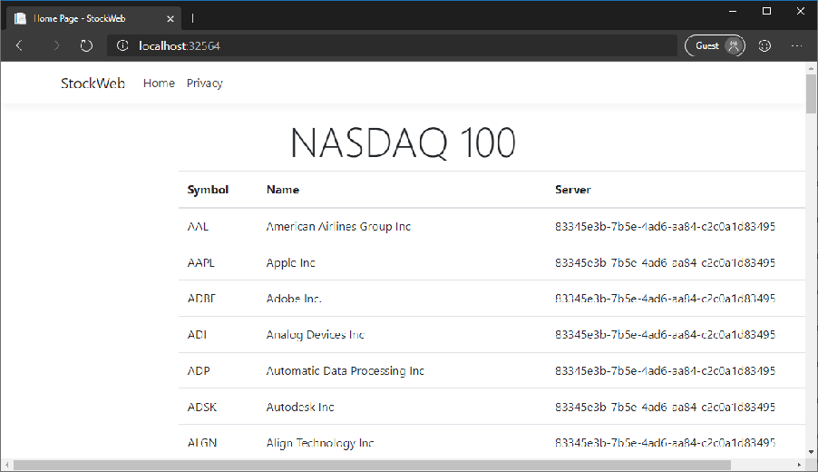
If the number of replicas of the stockdata Service were increased, you might expect the Server value to change from line to line, but in fact all 100 records are always returned from the same instance. If you refresh the page every few seconds, the server ID remains the same. Why does this happen? There are two factors at play here.
First, the Kubernetes Service discovery system uses round-robin load balancing by default. The first time the DNS server is queried, it will return the first matching IP address for the Service. The next time, it will return the next IP address in the list, and so on, until the end. At that point, it loops back to the start.
Second, the HttpClient used for the StockWeb application’s gRPC client is created and managed by the ASP.NET Core HttpClientFactory, and a single instance of this client is used for every call to the page. The client only does one DNS lookup, so all requests are routed to the same IP address. And because the HttpClientHandler is cached for performance reasons, multiple requests in quick succession will all use the same IP address, until the cached DNS entry expires or the handler instance is disposed for some reason.
The result is that by default requests to a gRPC Service aren’t balanced across all instances of that Service in the cluster. Different consumers will use different instances, but that doesn’t guarantee a good distribution of requests or a balanced use of resources.
The next chapter, Service meshes, will address this problem.
A service mesh is an infrastructure component that takes control of routing service requests within a network. Service meshes can handle all kinds of network-level concerns within a Kubernetes cluster, including:
• Service discovery
• Load balancing
• Fault tolerance
• Encryption
• Monitoring
Kubernetes service meshes work by adding an extra container, called a sidecar proxy, to each pod included in the mesh. The proxy takes over handling all inbound and outbound network requests. You can then keep the configuration and management of networking matters separate from the application containers. In many cases, this separation doesn’t require any changes to the application code.
In the previous chapter’s example, the gRPC requests from the web application were all routed to a single instance of the gRPC service. This happens because the service’s host name is resolved to an IP address, and that IP address is cached for the lifetime of the HttpClientHandler instance. It might be possible to work around this behavior by handling DNS lookups manually or creating multiple clients. But this workaround would complicate the application code without adding any business or customer value.
When you use a service mesh, the requests from the application container are sent to the sidecar proxy. The sidecar proxy can then distribute them intelligently across all instances of the other service. The mesh can also:
• Respond seamlessly to failures of individual instances of a service.
• Handle retry semantics for failed calls or timeouts.
• Reroute failed requests to an alternate instance without returning to the client application.
The following screenshot shows the StockWeb application running with the Linkerd service mesh. There are no changes to the application code, and the Docker image isn’t being used. The only change required was the addition of an annotation to the deployment in the YAML files for the stockdata and stockweb services.
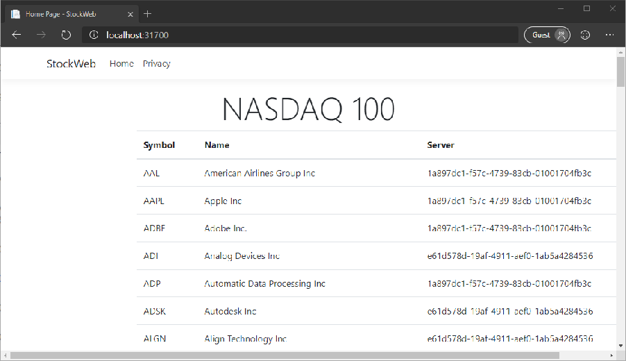
You can see from the Server column that the requests from the StockWeb application have been routed to both replicas of the StockData service, despite originating from a single HttpClient instance in the application code. In fact, if you review the code, you’ll see that all 100 requests to the StockData service are made simultaneously by using the same HttpClient instance. With the service mesh, those requests will be balanced across however many service instances are available.
Service meshes apply only to traffic within a cluster. For external clients, see the next chapter, Load Balancing.
Service mesh options Three general-purpose service mesh implementations are currently available for use with Kubernetes: Istio, Linkerd, and Consul Connect. All three provide request routing/proxying, traffic encryption, resilience, host-to-host authentication, and traffic control. Choosing a service mesh depends on multiple factors:
• The organization’s specific requirements around costs, compliance, paid support plans, and so on.
• The nature of the cluster, its size, the number of services deployed, and the volume of traffic within the cluster network.
• Ease of deploying and managing the mesh and using it with services.
In this example, you’ll learn how to use the Linkerd service mesh with the StockKube application from the previous section. To follow this example, you’ll need to install the Linkerd CLI. You can download
Windows binaries from the section that lists GitHub releases. Be sure to use the most recent stable release and not one of the edge releases.
With the Linkerd CLI installed, follow the Getting Started instructions to install the Linkerd components on your Kubernetes cluster. The instructions are straightforward, and the installation should take only a couple of minutes on a local Kubernetes instance.
The Linkerd CLI provides an inject command to add the necessary sections and properties to Kubernetes files. You can run the command and write the output to a new file.
linkerd inject stockdata.yml > stockdata-with-mesh.yml linkerd inject stockweb.yml > stockweb-with-mesh.yml
You can inspect the new files to see what changes have been made. For deployment objects, a metadata annotation is added to tell Linkerd to inject a sidecar proxy container into the pod when it’s created.
It’s also possible to pipe the output of the linkerd inject command to kubectl directly. The following commands will work in PowerShell or any Linux shell.
linkerd inject stockdata.yml | kubectl apply -f linkerd inject stockweb.yml | kubectl apply -f - |
|---|
Inspect services in the Linkerd dashboard Open the Linkerd dashboard by using the linkerd CLI. linkerd dashboard The dashboard provides detailed information about all services that are connected to the mesh.
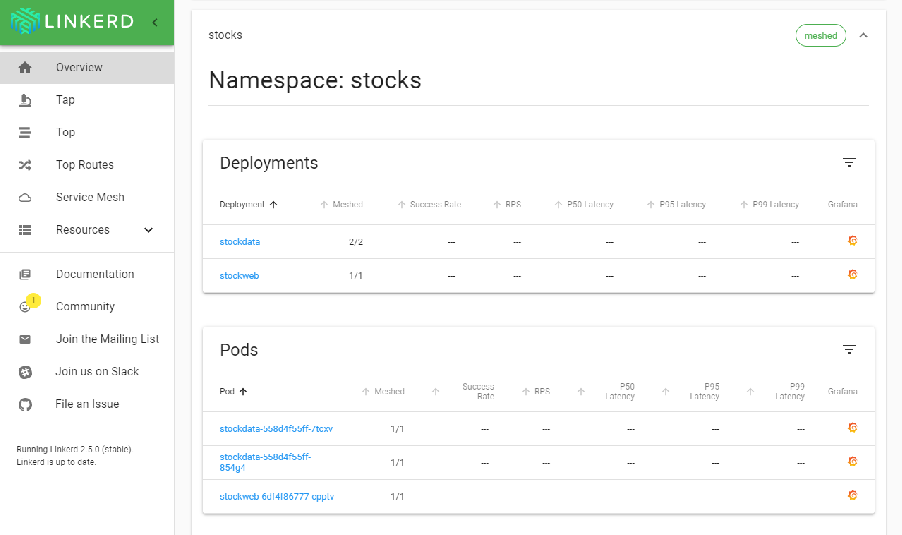
apiVersion: apps/v1 kind: Deployment metadata: name: stockdata namespace: stocks spec: selector: matchLabels: run: stockdata replicas: 2 # Increase the target number of instances template: metadata: annotations: linkerd.io/inject: enabled creationTimestamp: null labels: run: stockdata spec: containers: - name: stockdata image: stockdata:1.0.0 imagePullPolicy: Never resources: limits: cpu: 100m memory: 100Mi ports: - containerPort: 80 |
|---|
A typical deployment of a gRPC application includes a number of identical instances of the service, providing resilience and horizontal scalability. Load balancing distributes incoming requests across these instances to provide full usage of all available resources. To make this load balancing invisible to the client, it’s common to use a proxy load balancer server to handle requests from clients and route them to back-end instances.
Load balancers are classified according to the layer they operate on. Layer 4 load balancers work on the transport level, for example, with TCP sockets, connections, and packets. Layer 7 load balancers work at the application level, specifically handling HTTP/2 requests for gRPC applications.
An L4 load balancer accepts a TCP connection request from a client, opens another connection to one of the back-end instances, and copies data between the two connections with no real processing. L4 offers excellent performance and low latency, but with little control or intelligence. As long as the client keeps the connection open, all requests will be directed to the same back-end instance.
Azure Load Balancer is an example of an L4 load balancer.
An L7 load balancer parses incoming HTTP/2 requests and passes them on to back-end instances on a request-by-request basis, no matter how long the connection is held by the client.
Examples of L7 load balancers:
• NGINX
• HAProxy
• Traefik
As a rule of thumb, L7 load balancers are the best choice for gRPC and other HTTP/2 applications (and for HTTP applications generally, in fact). L4 load balancers will work with gRPC applications, but they’re primarily useful when low latency and low overhead are important.
ImportantAt the time of this writing, some L7 load balancers don’t support all the parts of the HTTP/2 specification that are required by gRPC services, such as trailing headers. |
|---|
If you’re using TLS encryption, load balancers can terminate the TLS connection and pass unencrypted requests to the back-end application, or they can pass the encrypted request along. Either way, the load balancer will need to be configured with the server’s public and private key so it can decrypt requests for processing.
See to the documentation for your preferred load balancer to find out how to configure it to handle HTTP/2 requests with your back-end services.
See the section on service meshes for a discussion of load balancing across internal services on Kubernetes.
In production environments like Kubernetes, it’s important to monitor applications to ensure they’re running optimally. Logging and metrics are important in particular. ASP.NET Core, including gRPC, provides built-in support for producing and managing log messages and metrics data, as well as tracing data.
Logging is concerned with text messages that record detailed information about things that have happened in the system. Log messages might include exception data, like stack traces, or structured data that provide context about the message. Logging output is commonly written to a searchable text store.
Metrics refers to numeric data designed to be aggregated and presented by using charts and graphs in a dashboard. The dashboard provides a view of the overall health and performance of an application. Metrics data can also be used to trigger automated alerts when a threshold is exceeded. Here are some examples of metrics data:
• Time taken to process requests.
• The number of requests per second being handled by an instance of a service.
• The number of failed requests on an instance.
ASP.NET Core provides built-in support for logging, in the form of Microsoft.Extensions.Logging NuGet package. The core parts of this library are included with the Web SDK, so there’s no need to install it manually. By default, log messages are written to the standard output (the “console”) and to any attached debugger. To write logs to persistent external data stores, you might need to import optional logging sink packages.
The ASP.NET Core gRPC framework writes detailed diagnostic logging messages to this logging framework, so they can be processed and stored along with your application’s own messages.
The logging extension is automatically registered with ASP.NET Core’s dependency injection system, so you can specify loggers as a constructor parameter on gRPC service types.
public class StockData : Stocks.StocksBase {
private readonly ILogger
{
_logger = logger; }
}
Many log messages, such as requests and exceptions, are provided by the ASP.NET Core and gRPC framework components. Add your own log messages to provide detail and context about application logic, rather than lower-level concerns.
For more information about writing log messages and available logging sinks and targets, see Logging in .NET Core and ASP.NET Core.
The .NET Core runtime provides a set of components for emitting and observing metrics. These include APIs such as the EventSource and EventCounter classes. These APIs can emit basic numeric data that can be consumed by external processes, like the dotnet-counters global tool, or Event Tracing for Windows. For more information about using EventCounter in your own code, see EventCounter introduction.
For more advanced metrics and for writing metric data to a wider range of data stores, you might try an open-source project called App Metrics. This suite of libraries provides an extensive set of types to instrument your code. It also offers packages to write metrics to different kinds of targets that include time-series databases, such as Prometheus and InfluxDB, and Application Insights. The App.Metrics.AspNetCore.Mvc NuGet package even adds a comprehensive set of basic metrics that are automatically generated via integration with the ASP.NET Core framework. The project website provides templates for displaying those metrics with the Grafana visualization platform.
Metric type |
Description |
|---|---|
Counter |
Tracks how often something happens, such as requests and errors. |
Gauge |
Records a single value that changes over time, such as active connections. |
Histogram |
Measures a distribution of values across arbitrary limits. For example, a histogram can track dataset size, counting how many contained <10 records, how many contained 11-100 records, how many contained 101-1000 records, and how many contained >1000 records. |
Meter |
Measures the rate at which an event occurs in various time spans. |
Metric type |
Description |
|---|---|
Timer |
Tracks the duration of events and the rate at which it occurs, stored as a histogram. |
public class StockData : Stocks.StocksBase { private static readonly CounterOptions GetRequestCounter = new CounterOptions { Name = "StockData_Get_Requests", MeasurementUnit = Unit.Calls }; private readonly IStockRepository _repository; private readonly IMetrics _metrics; public StockData(IStockRepository repository, IMetrics metrics) { _repository = repository; _metrics = metrics; } public override async Task context) { _metrics.Measure.Counter.Increment(GetRequestCounter); // Serve request... } } |
|---|
The best way to store metrics data is in a time-series database, a specialized data store designed to record numerical data series marked with timestamps. The most popular of these databases are Prometheus and InfluxDB. Microsoft Azure also provides dedicated metrics storage through the Azure Monitor service.
The current go-to solution for visualizing metrics data is Grafana, which works with a wide range of storage providers. The following image shows an example Grafana dashboard that displays metrics from the Linkerd service mesh running the StockData sample:
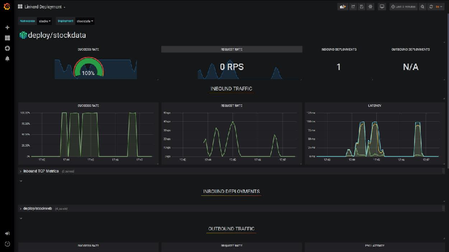
The numerical nature of metrics data means that it’s ideally suited to drive alerting systems, notifying developers or support engineers when a value falls outside of some defined tolerance. The platforms already mentioned all provide support for alerting via a range of options, including emails, text messages, or in-dashboard visualizations.
Distributed tracing is a relatively recent development in monitoring, which has arisen from the increasing use of microservices and distributed architectures. A single request from a client browser, application, or device can be broken down into many steps and sub-requests, and involve the use of many services across a network. This activity makes it difficult to correlate log messages and metrics with the specific request that triggered them. Distributed tracing applies identifiers to requests, and allows logs and metrics to be correlated with a particular operation. This tracing is similar to WCF’s end-to-end tracing, but it’s applied across multiple platforms.
Distributed tracing has grown quickly in popularity and is beginning to standardize. The Cloud Native Computing Foundation created the Open Tracing standard, attempting to provide vendor-neutral libraries for working with back ends like Jaeger and Elastic APM. At the same time, Google created the OpenCensus project to address the same set of problems. These two projects are merging into a new project, OpenTelemetry, which aims to be the industry standard of the future.
How distributed tracing works Distributed tracing is based on the concept of spans: named, timed operations that are part of a single trace, which can involve processing on multiple nodes of a system. When a new operation is initiated, a trace is created with a unique identifier. For each sub-operation, a span is created with its own
identifier and trace identifier. As the request passes around the system, various components can create child spans that include the identifier of their parent. A span has a context, which contains the trace and span identifiers, as well as useful data in the form of key and value pairs (called baggage).
.NET has an internal module that maps well to distributed traces and spans: DiagnosticSource. As well as providing a simple way to produce and consume diagnostics within a process, the DiagnosticSource module has the concept of an activity. An activity is effectively an implementation of a distributed trace, or a span within a trace. The internals of the module take care of parent/child activities, including allocating identifiers. For more information about using the Activity type, see the Activity User Guide on GitHub.
Because DiagnosticSource is a part of the core framework and later, it’s supported by several core components. These include HttpClient, Entity Framework Core, and ASP.NET Core, including explicit support in the gRPC framework. When ASP.NET Core receives a request, it checks for a pair of HTTP headers matching the W3C Trace Context standard. If the headers are found, an activity is started by using the identity values and context from the headers. If no headers are found, an activity is started with generated identity values that match the standard format. Any diagnostics generated by the framework or by application code during the lifetime of this activity can be tagged with the trace and span identifiers. The HttpClient support extends this functionality further by checking for a current activity on every request, and automatically adding the trace headers to the outgoing request.
The ASP.NET Core gRPC client and server libraries include explicit support for DiagnosticSource and Activity, and create activities and apply and use header information automatically.
NoteAll of this happens only if a listener is consuming the diagnostic information. If there’s no listener, no diagnostics are written and no activities are created. |
|---|
Add your own DiagnosticSource and Activity To add your own diagnostics or create explicit spans within your application code, see the DiagnosticSource User Guide and Activity User Guide.
At the time of writing, the OpenTelemetry project is still in the early stages, and only alpha-quality packages are available for .NET applications. The OpenTracing project currently offers more mature libraries.
The OpenTracing API is described in the following section. If you want to use the OpenTelemetry API in your application instead, refer to the OpenTelemetry .NET SDK repository on GitHub.
The OpenTracing NuGet package supports all OpenTracing-compliant back ends (which can be used independently of DiagnosticSource). There’s an additional package from the OpenTracing API
Contributions project, OpenTracing.Contrib.NetCore. This package adds a DiagnosticSource listener, and writes events and activities to a back end automatically. Enabling this package is as simple as installing it from NuGet and adding it as a service in your Program class.
// builder.Services.AddOpenTracing(); // |
|---|
The OpenTracing package is an abstraction layer, and as such it requires implementation specific to the back end. OpenTracing API implementations are available for the following open source back ends.
Name |
Package |
Website |
|---|---|---|
Jaeger |
Jaeger |
jaegertracing.io |
Elastic APM |
Elastic.Apm.NetCoreAll |
elastic.co/products/apm |
CHAPTER |
|---|
Appendix A - Transactions
Windows Communication Foundation (WCF) supports distributed transactions, allowing you to perform atomic operations across multiple services. This functionality is based on the Microsoft Distributed Transaction Coordinator.
In the newer microservices landscape, this type of automated distributed transaction processing isn’t possible. There are too many different technologies involved, including relational databases, NoSQL data stores, and messaging systems. There might also be a mix of operating systems, programming languages, and frameworks in use in a single environment.
WCF distributed transaction is an implementation of what is known as a two-phase commit (2PC). You can implement 2PC transactions manually by coordinating messages across services, creating open transactions within each service, and sending commit or rollback messages, depending upon success or failure. However, the complexity involved in managing 2PC can increase exponentially as systems evolve. Open transactions hold database locks that can negatively affect performance, or, worse, cause cross-service deadlocks.
If possible, it’s best to avoid distributed transactions altogether. If two items of data are so linked as to require atomic updates, consider handling them both with the same service. Apply those atomic changes by using a single request or message to that service.
If that isn’t possible, then one alternative is to use the Saga pattern. In a saga, updates are processed sequentially; as each update succeeds, the next one is triggered. These triggers can be propagated from service to service, or managed by a saga coordinator or orchestrator. If an update fails at any point during the process, the services that have already completed their updates apply specific logic to reverse them.
Another option is to use Domain Driven Design (DDD) and Command/Query Responsibility Segregation (CQRS), as described in the .NET Microservices e-book. In particular, using domain events or event sourcing can help to ensure that updates are consistently, if not immediately, applied.
104 CHAPTER 8 | Appendix A - Transactions